Kappale 2 2018
2.1 Tentti
Tästä vuodesta alkaa monivalintakysymykset wikissä.
2.1.1 Mikä on tyypillisen raudanpuuteanemian verenkuva?
- Matala Hb ja korkea MCV
- Normaali Hb ja matala mcv
- Matala Hb ja matala trombosyyttiluku
- Matala Hb ja matala MCV
dAnemia luokitellaan punasolujen keskitilavuuden (MCV, mean corpuscular volume) mukaan mikrosytääriseen (MCV <80 fl), normosytääriseen (MCV 80-100 fl) ja makrosytääriseen (MCV >100 fl) anemiaan.
Raudanpuuteanemia on anemian tavallisin syy ja on myös yleensä mikrosytäärinen (voi olla normosytäärinen puutteen alkuvaiheissa).
a: MCV on raudanpuuteanemiassa tyypillisesti matala, ei korkea
b: Hemoglobiini (Hb) on anemiassa matala. Miehillä anemian raja on <134g/l ja naisilla <117 g/l. Hemoglobiinin alenemista > 20 g/l yksilön normaalitasosta voidaan periaatteessa myös pitää anemiana (vaikka B-Hb olisikin vielä viitevälin sisällä).
c: Raudanpuute aiheuttaa usein reaktiivista trombosytoosia. Anemia aiheuttaa EPO:n upregulaation, mutta raudanpuutteessa tämä ylimääräinen EPO ei pysty stimuloimaan tehokkaasti punasolujen tuotantoa (rauta eli tarvittava raaka-aine puuttuu), jolloin EPO:n stimulatorinen vaikutus siirtyy enemmän ohjaamaan megakaryosyyttien kehittymistä ja siten muodostuu lisää verihiutaleita

2.1.2 Mikä seuraavista on folaatinpuutteen synnyn riskitekijä?
- Liian lihaisa dieetti
- Alkoholipitoinen dieetti
- Pelkästään kasvisperäinen dieetti
- Laihduttaminen
bAlkoholismi on usein myös yhteydessä heikkoon ja yksipuoliseen ravintoon sekä folaatin imeytymisen häiriöitymiseen -> folaatin puute. Alkoholi vaurioittaa suoliston limakalvoa ja häiritsee folaatin kuljetusmekanismeja, jolloin sitä ei imeydy tehokkaasti ruoasta. Alkoholi myös lisää folaatin erittämistä virtsaan ja häiritsee sen metaboloitumista ja varastoitumista maksassa.
a: Erittäin yksipuolinen, pelkkää lihaa sisältävä dieetti voi sinänsä vähentää folaatin saantia verrattuna kasvispainotteiseen ruokavalioon, mutta folaattia kyllä on vähän lihassakin. Alkoholi on myös parempi vastaus tässä kontekstissa, kun se kerran on tarjolla.
c: Parhaiten folaattia saa kasviksista (kuten tummanvihreistä lehtivihanneksista), palkokasveista ja täysjyvistä). Pelkkä kasvisruokavalio ei siis altista folaatin puutteelle
d: Terveellisesti ja monipuolisesti toteutettu laihduttaminen ei itsessään aiheuta folaatin puutetta, ellei kyseessä ole äärimmäisen radikaali ja yksipuolinen dieetti.2.1.3 Mikä seuraavista ei ole hemolyysin osoituskoe
- Seerumin LDH (laktaattihydrogenaasi)
- Veren trombosyyttiluku
- Seerumin bilirubiini
- Veren retikulosyyttiarvo
bHemolyysi tarkoittaa punasolujen hajoamista ja se voi olla joko intravaskulaarista (verisuonien sisällä tapahtuvaa) ja/tai ekstravaskulaarista (verisuonien ulkopuolella pääasiassa RES-makrofagien (retikuloendoteliaalisysteemin eli pernan, maksan ja imusolmukkeiden makrofagit) toimesta tapahtuvaa) aiheuttajasta riippuen.
Hemoglobiini koostuu hemistä ja globiinista ja hemolyysissä voidaankin todeta labroista näiden rakennuskappaleiden metabolian tuotteita ja sitä kautta päätellä, onko hemolyysiä tapahtunut.
- Protoporfyriini oksidoidaan ja siitä tuotetaan konjugoimatonta bilirubiinia erityisesti RES-makrofageissa (nousee siis erityisesti ekstravaskulaarisessa hemolyysissä, mutta kyllä myös intravaskulaarisessa hemolyysissä). Konjugoimaton bilirubiini kulkee veressä sitoutuneena albumiiniin (konjugoimaton bilirubiini ei ole vesiliukoista) ja se poistetaan verestä maksassa.
- Jos (varsinkin ekstravaskulaarinen) hemolyysi on runsasta, niin bilirubiinin kertyminen voi aiheuttaa ikterusta (keltaisuutta), jos konjugoitumattoman bilirubiinin tuottonopeus ylittää maksan konjugoimiskapasiteetin ja konjugoimatonta bilirubiinia kertyy verenkiertoon.
Hemolyysiä epäiltäessä (tai yleisesti normosytääristä/makrosytääristä anemiaa selviteltäessä) on järkevää mitata E-Retik eli veren retikulosyyttien osuus. Retikulosyytit ovat epäkypsiä punasolujen esiasteita ja erityisesti hemolyysin yhteydessä ilmenee retikulosytoosia (kompensatorinen vaste, kun luuydin yrittää tuottaa korvaavia punasoluja). Jos taas on retikulosytopeniaa, niin se viittaa huonontuneeseen punasolutuotantoon (esim. sekundaarianemiaan tai luuytimen infiltraatioon). Normaali E-Retik on 0.6-2% eli retikulosytoosi on >2% (tosin anemia voi johtaa väärin koholla olevaan E-Retikiin, jos punasolujen määrä vähenee).
Hemolyysiselvittelyiden yhteydessä otetaan ym. mainittujen labrojen lisäksi tyypillisesti vielä E-Coombs. Suora Coombsin koe eli suora antiglobuliinikoe on positiivinen immunohemolyyttisessä anemiassa (tutkitaan onko potilaan punasolujen pintaan kiinnittynyt in vivo vasta-aineita tai komplementtia).

2.1.4 Millä trombosyyttitasolla voi ottaa luuydinaspiraationäytteen?
- B-trom oltava yli 40
- Trombosyyttitasolla ei ole väliä
- B-trom oltava yli 20
- B-tromb oltava yli 60
bLuuytimen tutkiminen on tärkeää monien verisairauksien diagnostiikassa sekä hoitojen vaikutusten seurannassa. Luuydintä voidaan tutkia ottamalla luuytimestä joko koepala (luuydinbiopsia) tai imunäyte (luuydinaspiraatio). Luuydinbiopsian yhteydessä otetaan aina myös aspiraationäyte. Aspiraationäyte ei usein yksinään riitä diagnoosin tekemiseksi tai hoidon vaikutusten seuraamiseksi, jolloin tarvitaan koepala. Koepala tarvitaan myös silloin, jos imunäytettä ei saada otetuksi luuytimen rakenteen poikkeavuuden vuoksi.
Näyte otetaan alaselän alueelta suoliluun takaharjanteesta potilaan maatessa kyljellään polvet koukistettuina. Lääkäri puuduttaa näytteenottokohdan ihon sekä luun pinnan eli luukalvon. Ihon puhdistamisen jälkeen lantion suojaksi asetetaan steriilit liinat. Ihoon tehdään pieni viiltohaava biopsianeulan viemiseksi ihon läpi. Näytteenoton yhteydessä otetaan pieni määrä luuydinnestettä punktioneulalla ja kertakäyttöruiskulla imemällä (aspiraationäyte). Tämän jälkeen otetaan biopsianeulalla luuytimestä pieni koepala. Imunäytteitä otettaessa saattaa tuntua hetkellinen vihlaisu, joka johtuu paineen vaihtelusta luuytimessä. Luuydinbiopsia on potilaalle usein pelottava toimenpide ja hetkellisesti myös kivulias sellainen. Ei liene siis kohtuutonta tarjota etukäteen riittävän tehokasta kivun tai pelon lievitystä ainakin valikoiduille potilaille.
Vakavia välittömiä verenvuotoja ei tyypillisesti ilmaannu edes liittyen mataliin trombosyyttiarvoihin tai lääkityksen, kuten verihiutaleiden estäjien tai antikoagulanttien, käyttöön. Huolellinen kompressio riittää yleensä vuodon tyrehdyttämiseksi.
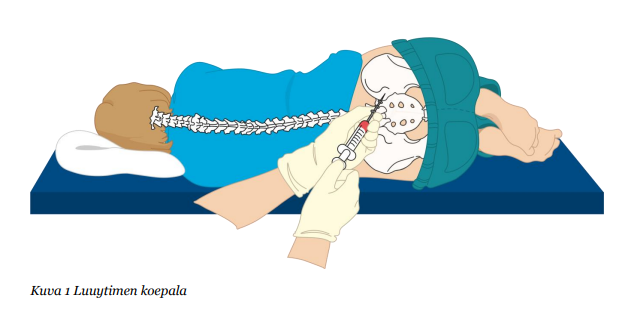
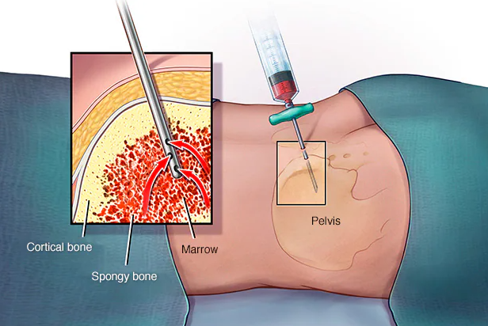
2.1.5 Aplastinen anemia on
- Kaikkien pääsolulinjojen vajavainen tuotanto luuytimessä
- Tietyn geenivirheen aiheuttama luuytimen vajaatoiminta
- Punasolusiirroista riippuvainen anemia
- Syvä raudanpuuteanemia
aAplastinen anemia johtuu vauriosta hematopoieettisiin kantasoluihin, mikä johtaa pansytopeniaan (anemia, trombosytopenia ja leukopenia) eli kyseessä ei ole vain anemia, vaan muidenkin verisolujen tuotannon puutos.
Aplastisessa anemiassa tärkeä diagnostinen tutkimus on luuydinbiopsia (imunäytteen perusteella ei voida luotettavasti arvioida luuytimen solukkuutta), jossa havaitaan rasvainen ja hyposellulaarinen luuydin.
b: Yleensä aiheuttaja on idiopaattinen; mahdollisesti autoimmuuniperäinen. Joskus se voi johtua myös säteilystä tai lääkkeistä (esim. kloramfenikoli, antimetaboliitit, alkyloivat tekijät), joskus myös virusinfektioista (esim. EBV, HIV, hepatiitti). Vaikka on olemassa harvinaisia perinnöllisiä muotoja (kuten Fanconin anemia, joka johtuu dsDNA:n korjausmekanismia häiritsevästä BRCA-mutaatiosta), sairaus ei yleisesti ottaen ole “tietyn geenivirheen aiheuttama”.
c: Aplastista anemiaa hoidetaan, jos se aiheuttaa punasolu- tai trombosyyttisiirtoja vaativan sytopenian tai neutropeniasta johtuvia infektioita. Vakiintuneita hoito-ohjeita ei ole, mutta immunosuppressiivinen lääkitys on tyyppillistä. Anemiaan voidaan kokeilla erytropoietiinia, trombosytopeniaan trombopoietiinireseptorin agonistia ja neutropeniaan valkosolukasvutekijää. Androgeenejakin voidaan harkita, samoin täysimittaista immunosuppressiivista hoitoa. Nuorilla potilailla (<40v.), joilla on vaikea aplastinen anemia, ensilinjan hoito on allogeeninen kantasolusiirto.
d: Raudanpuuteanemia ja aplastinen anemia ovat eri sairauksia. Aplastisessa anemiassa elimistön rautavarastot ovat yleensä aivan normaalit (tai transfuusioiden vuoksi jopa kohonnut).
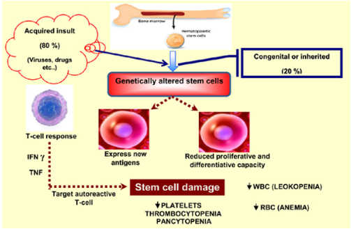
2.1.6 Mikä näistä ei kuulu ns. B-oireisiin
- Iltalämpöily
- Yöhikoilu
- Painon lasku
- Vatsavaivat
dB-oireet viittaavat kuumeeseen (38C), voimakkaaseen yöhikoiluun ja tarkoittamattomaan painonlaskuun (>10% puolessa vuodessa). B-oire-nimitystä käytetään usein muissakin konteksteissa, mutta virallisesti tämä triadi liittyy lymfoomiin. Oireet eivät ole spesifisiä lymfoomille (erityisesti erikseen), mutta niiden havaitseminen varsinkin triadina herättää ajatuksia lymfoomasta. B-oireiden olemassaololla on prognostista merkitystä lymfoomissa ja vaikuttaa niiden stageen.
B-oireet saavat nimensä Ann Arborin levinneisyysluokituksesta (I-IV levinneisyysaste) ja A/B (ei/on yleisoireita).
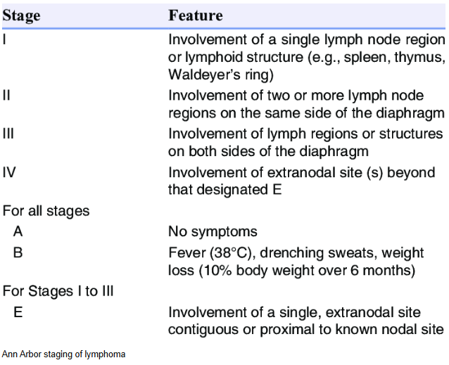
2.1.7 Multippelin myelooman yleisin ensioire on:
- Selkäkipu
- Anemia
- Anuria
- Sekavuus (hyperviskositeetti)
aMyelooma tarkoittaa malignia yleistynyttä monoklonaalista plasmasolujen proliferaatiota luuytimessä. Todetaan yleensä >60-vuotiailla. Periaattessa on yleisin luun/luuytimen primaarinen maligniteetti (yleisin ylipäätään on metastaasi), mutta myeloomaa voidaan käsitellä hematologisena luuytimen kasvaimena, ja selkeästi itse luun primaareista tuumoreista osteosarkooma on yleisin.
Multippelin myelooman yleisin oire on luustokipu ja erityisesti selkäkipu; johtuu osteoklastien aktivaatiosta ja kiihtyneestä luuresorptiosta -> Multippelin myelooman aiheuttamat luuleesiot ovat siis lyyttisiä. Noin 70–80 %:lla myeroomapotilaista on diagnoosihetkellä luustokipuja.
Muut multippelin myelooman tyypillisimmistä kohde-elinhäiriöistä voi muistaa CRAB-säännöstä, jota käytetään diagnostiikassa. Myelooman diagnostiset kriteerit lyhyesti:
CRAB:
- Lyyttiset luuleesiot vapauttavat kalsiumia -> hyperkalsemia
- Vapaat kevytketjuproteiinit (Bence Jones -proteiinit) yhdistyvät nefronin luumenissa muihin proteiineihin ja muodostavat obstruktoivia lieriöitä (light chain cast nepropathy, LCDD)
- Vapaat kevytketjuproteiinit voivat depositoitua glomerulukseen ja tubuluksiin paksuntaen tyvikalvoa ja siten häiriten filtraatiota -> proteinuria ja nefroottinen oireyhtymä (light chain deposition disease)
- Luun kiihtyneestä resorptiosta johtuva hyperkalsemia aiheuttaa nefrokalsinoosia ja edistää munuaisten vajaatoimintaa
- AL-amyloidoosi munuaisessa. Vapaat kevyet ketjut kiertävät seerumissa ja depositoituvat kudoksiin AL-amyloidiksi; johtuu kevyiden ketjujen ylituotannosta (AL-amyloidoosissa muodostuu liukenemattomia amyloidifibrillejä, kun taas LCDD:ssa ei muodostu näitä amyloidifibrillejä)
- Luuytimen täyttyminen neoplastisista soluista vähentää normaalia erytropoieesia. Myös myelooman aiheuttama munuaisten vajaatoiminta johtaa EPO:n vähäiseen tuotantoon ja siten edistää anemiaa
- Selkäranka on yleisin lokaatio, mutta voi olla laaja-alaisesti muuallakin. Selkärangassa voi helposti altistaa patologisille murtumille. Tyypillinen leesio on ns. punched-out lyyttinen pesäke (näkyy yleensä varsin selkeänä kallossa).
b: Anemia on erittäin yleinen löydös multippelissa myeloomassa, ja se aiheuttaa väsymystä ja suorituskyvyn laskua. Luustokivut kuitenkin ovat yleisempi ensioireena ja vasta selvittelyissä todetaan anemia.
c: Anuria tarkoittaa virtsantulon täydellistä lakkaamista. Myelooma voi kyllä vaurioittaa munuaisia monella mekanismilla ja munuaisten vajaatoiminta on yleistä, mutta täydellinen anuria ensioireena on kuitenkin erittäin harvinainen.
d: Hyperviskositeettioireyhtymä (veren liiallinen sitkeys suuren paraproteiinimäärän vuoksi; paraproteiini tarkoittaa siis immunoglobuliinia ja/tai immunoglobuliinin kevyttä ketjua (Bence Jones proteiini), joka havaitaan veressä tai virtsassa klonaalisesti proliferoituvien kypsien B-solujen tuottamana) voi aiheuttaa keskushermosto-oireita, kuten sekavuutta, päänsärkyä tai näköhäiriöitä. Se on kuitenkin multippelissa myeloomassa harvinainen komplikaatio. Hyperviskositeettiongelmat ovat huomattavasti tyypillisempi Waldenströmin makroglobulinemiassa, jossa ongelmana on korkea IgM:n tuotanto (multippelissa myeloomassa taas pääasiassa IgG, IgA tai kevytketjut). IgM on todella iso globuliini ja sen kertyminen helposti johtaa hyperviskositeettioireisiin verrattuna pienempiin IgG ja IgA. Sekavuus voi myeloomapotilaalla johtua myös hyperkalsemiasta, mutta sekään ei yleensä ole sairauden ensimmäinen tai yleisin oire.
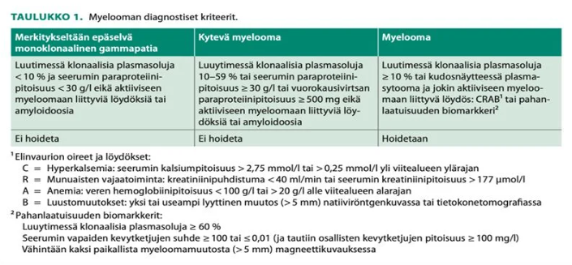
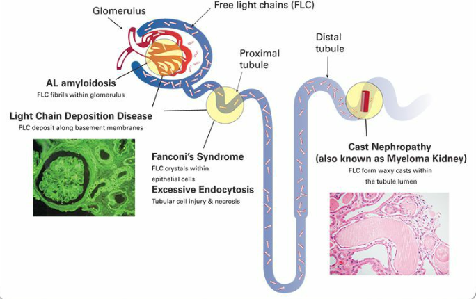
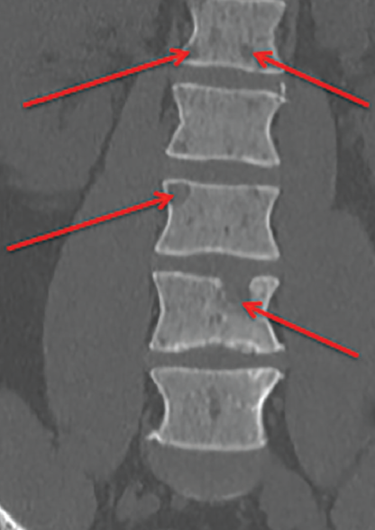
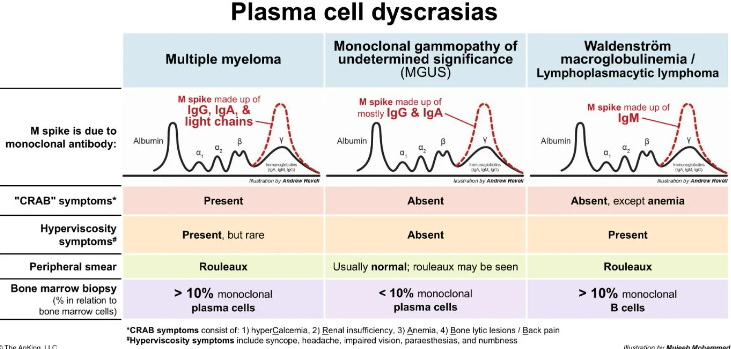
2.1.8 Mikä seuraavista ei aiheuta vuototaipumusta
- Polysytemia verassa trombosyytit yli 1500
- Maksan vajaatoiminta
- Talassemia
- Sepsis
cTalassemia tarkoittaa anemiaa, joka johtuu globiiniketjujen vähäisestä synteesistä. Tämän taustalla on perinnöllinen mutaatio joko alfa- tai beeta-globiiniketjun geeneissä -> hemoglobinopatia. Yleisimpiä talassemiat ovat Välimeren alueella, Afrikassa ja Aasiassa (erityisesti Intiassa) eli malaria-alueilla (uskotaan suojaavan malarialta).
Hemoglobiinin tuotantohäiriö johtaa mikrosytääriseen anemiaan, mutta ei häiritse veren hyytymisjärjestelmää (trombosyyttejä tai hyytymistekijöitä).
a: Kun trombosyyttitaso nousee erittäin korkeaksi (yleensä >1000-1500), potilaalle kehittyykin usein hankitun von Willebrandin taudin kaltainen tila, kun suuri määrä verihiutaleita sitoo ja pilkkoo verestä von Willebrand -hyytymistekijää.
b: Maksa syntetisoi lähes kaikki veren hyytymistekijät -> maksan vajaatoiminnassa on hyytymistekijävaje ja siten kohonnut vuotoriski.
d: Vakava sepsis voi mm. laukaista DIC-oireyhtymän (disseminoitunut intravaskulaarinen koagulaatio). Siinä infektio laukaisee laaja-alaisesti hyytymiskaskadia ja verisuonien seinämiin syntyy mikrotulppia. Tämä kuluttaa äärimmäisen nopeasti loppuun elimistön kaikki käytettävissä olevat verihiutaleet ja hyytymistekijät (“kulutuskoagulopatia”). Kun hyytymistarvikkeet loppuvat, seurauksena on henkeä uhkaava, vaikeasti hallittava vuototaipumus. Myös trombien muodostuessa aktivoituva fibrinolyyttinen järjestelmä altistaa vuodoille.2.1.9 Kun veriryhmä on O, plasmassa olevat isoagglutiinit ovat tyypiltään
- Anti-A ja Anti-B
- Ei ole isoagglutiineja
- Anti-A
- Anti-B
aABO-veriryhmää kohtaan muodostuu vasta-aineita luonnollisesti immuunisysteemin kohdatessa puuttuvat ABO-antigeenit ruoan tai mikro-organismien kautta. Tapahtuu aikaisin kehityksen aikana; immuunipuolustuksen kehittyessä vasta-aineita alkaa muodostua ja >0,5-vuotiailla ilmenee ABO-vasta-aineita niitä ABO antigeeneja kohtaan, joita henkilöllä itsellään ei ole.
Koska O-veriryhmässä punasolujen pinnalla ei ole A- tai B-antigeenejä, niin niitä vastaan muodostuu luonnollisesti anti-A- ja anti-B-vasta-aineita plasmaan. Tämän takia O-ryhmäläiset voivat vastaanottaa vain O-ryhmän verta.
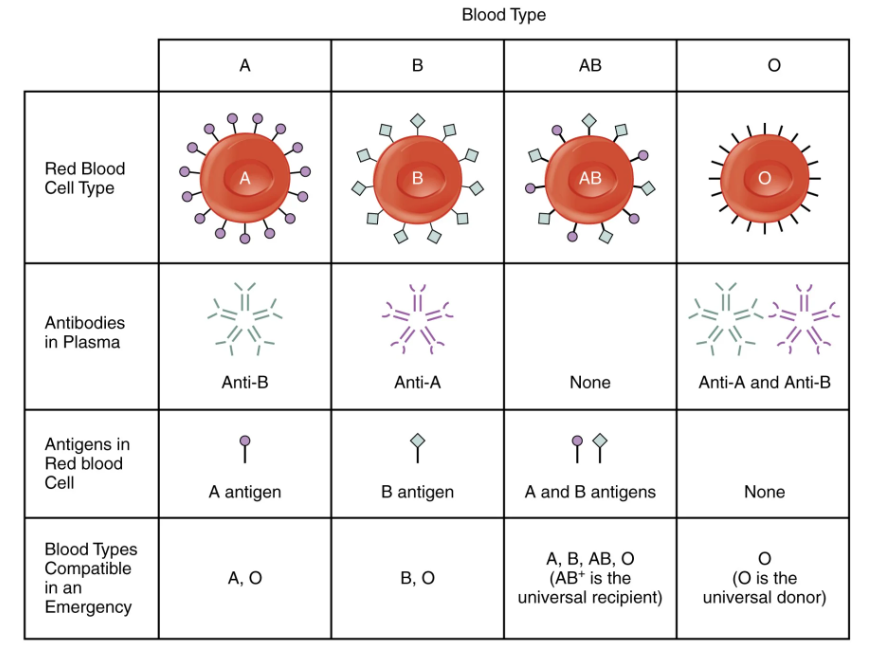
2.1.10 Mikä on B-12-vitamiinin kuljetusproteiini veressä?
- Albumiini
- Transferriini
- Transkobalamiini
- Intrinsic factor
cB12-vitamiinin (kobalamiinin) imeytymisprosessi:
- B12-vitamiinin tyypillinen labraselvittely on B12-TC2, koska halutaan mitata aktiivinen B12.
a: Albumiini on veren yleisin proteiini, ja se toimii monien lääkeaineiden, hormonien, rasvahappojen ja ionien (kuten kalsiumin) yleisenä kuljettajana sekä ylläpitää veren kolloidiosmoottista painetta. Se ei kuitenkaan ole B12-vitamiinin spesifinen kuljetusproteiini.
b: Transferriini on nimenomaan raudan kuljetusproteiini veressä.
d: Intrinsic factor (IF) toimii mahalaukussa ja suolistossa, ei veressä. IF mahdollistaa B12:n imeytymisen suolistossa.

2.1.11 Mikä seuraavista sopii hemolyyttiseen anemiaan?
- Potilas on punakka
- Oirekuva kehittyy aina hitaasti
- Syvä anemia ja potilas oireeton
- Potilas on ikteerinen
Solution.
dHemolyysi tarkoittaa punasolujen hajoamista ja se voi olla joko intravaskulaarista (verisuonien sisällä tapahtuvaa) ja/tai ekstravaskulaarista (verisuonien ulkopuolella pääasiassa RES-makrofagien (retikuloendoteliaalisysteemin eli pernan, maksan ja imusolmukkeiden makrofagit) toimesta tapahtuvaa) aiheuttajasta riippuen.
Hemoglobiini koostuu hemistä ja globiinista ja hemolyysissä voidaankin todeta labroista näiden rakennuskappaleiden metabolian tuotteita ja sitä kautta päätellä, onko hemolyysiä tapahtunut.
- Protoporfyriini oksidoidaan ja siitä tuotetaan konjugoimatonta bilirubiinia erityisesti RES-makrofageissa (bilirubiini nousee siis erityisesti ekstravaskulaarisessa hemolyysissä, mutta kyllä myös intravaskulaarisessa hemolyysissä). Konjugoimaton bilirubiini kulkee veressä sitoutuneena albumiiniin (konjugoimaton bilirubiini ei ole vesiliukoista) ja se poistetaan verestä maksassa.
- Jos (varsinkin ekstravaskulaarinen) hemolyysi on runsasta, niin bilirubiinin kertyminen voi aiheuttaa ikterusta (keltaisuutta), jos konjugoitumattoman bilirubiinin tuottonopeus ylittää maksan konjugoimiskapasiteetin ja konjugoimatonta bilirubiinia kertyy verenkiertoon.
a: Anemiassa potilas voi olla pikemminkin kalpea kuin punainen. Punakkuus (plethora) voi viitata päinvastaiseen tilaan eli polysytemiaan, jossa punasoluja on liikaa.
b: Hemolyyttinen anemia voi kehittyä todella nopeasti; esim. autoimmuunihemolyyttinen anemia (AIHA), sopimaton verensiirto tai tietyt lääkeaineen laukaisemat hemolyysit
c: Elimistö (esim. sydämen iskutilavuuden ja sykkeen nousu) pystyy sopeutumaan syväänkin anemiaan melko oireettomasti vain silloin, kun anemia kehittyy hyvin hitaasti kuukausien tai vuosien kuluessa (kuten kroonisessa raudanpuutteessa). Koska hemolyysi on usein luonteeltaan nopeampaa tai jopa äkillistä, elimistön kompensaatiomekanismit eivät ehdi tasapainottamaan vointia.2.1.12 Minkä karsinooman ensioire voi olla erytrosytoosi (polysytemia)?
- Munuaiskarsinooma
- Prostatakarsinooma
- Kohtukarsinooma
- Ovariokarsinooma
aYleisimmät aiheuttajat sekundaariselle erytrosytoosille ovat tupakointi ja krooniset keuhkosairaudet, koska nämä aiheuttavat heikkoa hapensaantia ja keho kompensoi lisäämällä hapenkantokykyä (EPO-tuotanto stimuloituu hypoksiassa) -> punasolujen tuotanto lisääntyy.
Myös mm. tietyt tuumorit, kuten munuaisten tai maksan tuumorit voivat aiheuttaa sekundaarista erytrosytoosia EPO:n liikatuotannon kautta. Suurin osa EPO:sta tuotetaan normaalisti munuaisten peritubulaarisoluissa -> munuaiskarsinooma on yleisin maligniteetti, joka aiheuttaa liiallista EPO:n tuotantoa.2.1.13 Missä seuraavista ns. klassisista myeloproliferatiivisista taudeista löytyy Philadelphia-kromosomi?
- Essentielli trombosytoosi
- Polysytemia vera
- Myelofibroosi
- Krooninen myelooinen leukemia
dKroonisen myelooisen leukemian (KML) osoittamiseen tärkein merkki on yhdistelmägeenin BCR-ABL1 esiintyminen, joka johtuu translokaatiosta t(9;22); kromosomitutkimuksissa todetaan tyypillisesti Philadelphia-kromosomi. KML:n diagnoosi perustuu fuusiogeenin (BCR-ABL1) osoittamiseen verinäytteestä ja/tai Philadelphia-kromosomin (Ph) osoittamiseen luuydinnäytteestä.
BCR-ABL1-fuusiproteiinilla on lisääntynyt tyrosiinikinaasi-aktiviteetti, mikä lisää kasvusignaalien transmittoitumista solun ytimeen.
a,b ja c: Muut myeloproliferatiiviset neoplasiat eli essentiaalinen trombosytemia (ET), polysytemia vera (PV) ja primaarinen myelofibroosi (PMF) ovat taas enemmänkin yhteydessä JAK2-mutaatioihin (janus kinaasi 2). V617F-pistemutaatio JAK2-geenissä johtaa myeloidien esiastesolujen kasvutekijäyliherkkyyteen -> myeloproliferaatio.
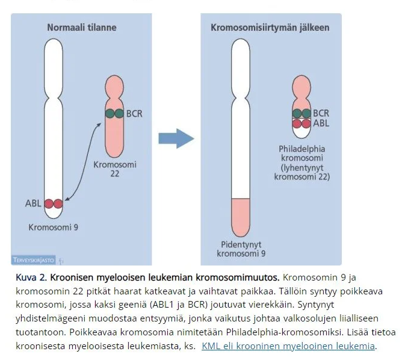

2.1.14 Mikä viittaa makrosytääriseen anemiaan?
- Punasolujen suuri hemoglobiinimassa (E-MCH)
- Punasolujen suuri koko (E-MCV)
- B-Hb 100-120 g/l
- Pieni erytrosyyttiluku (B-eryt)
bAnemia luokitellaan punasolujen keskitilavuuden (MCV, mean corpuscular volume) mukaan mikrosytääriseen (MCV <80 fl), normosytääriseen (MCV 80-100 fl) ja makrosytääriseen (MCV >100 fl) anemiaan.
a: MCH kertoo yksittäisen punasolun sisältämän hemoglobiinin keskimääräisen massan. Makrosytäärisessä anemiassa MCH on kyllä usein iso, mutta makrosytäärisyydellä suoraan viitataan korkeaan MCV:hen.
c: Osoittaa lievää anemiaa ja voi liittyä mihin tahansa anemiatyyppiin
d: Erytrosyyttien määrä on kyllä usein pieni makrosytäärisessä anemiassa, mutta niin voi olla muissakin anemioissa.2.1.15 Polysytemia veran transformaatiolla (taudin kulun muutos) tarkoitetaan
- Taudin muuntumista myelofibroosiksi
- Hemoglobiinitaso pysyy tasaisena ilman hoitoja
- Budd-Chiarin syndrooman ilmaantumista
- Taudin muuntumista krooniseksi myelooiseksi leukemiaksi
aMyeloproliferatiiviset sairaudet voivat edetä luuytimen fibroosiin (“spent phase”) tai transformoitua akuutiksi leukemiaksi (“blastikriisi”) eli polysytemia vera voi edetä/transformoitua myelofibroosiksi tai akuutiksi myelooiseksi leukemiaksi (AML); myelofibroosi on yleisempi.
Vuosien tai vuosikymmenien kuluessa sairaudella on taipumus edetä niin sanottuun “loppuvaiheeseen” eli spent-vaiheeseen, jolloin luuydin sidekudostuu eli fibrosoituu, eikä se enää kykene tuottamaan soluja. Tätä kutsutaan post-PV-myelofibroosiksi (myös sana sekundaarinen myelofibroosi on käytössä). Myelofibroosi voi kehittyä ilman edeltävää verisairautta (primaarinen myelofibroosi, PMF) tai hiljalleen mm. polysytemia veran pohjalta.
b: Tämä kuvaisi taudin pysymistä stabiilina tai remission saavuttamista, mikä on transformaation vastakohta
c: Budd-Chiarin oireyhtymä eli maksalaskimotukos on tunnettu ja vakava PV:n komplikaatio, joka johtuu veren suuresta viskositeetista ja tromboosialttiudesta. Se on elinkomplikaatio, ei itse pahanlaatuisen perustaudin transformaatio
d: Vaikka PV ja KML kuuluvat molemmat kroonisiin myeloproliferatiivisiin sairauksiin, PV ei transformoidu KML:ksi. PV voi transformoitua akuutiksi myelooiseksi leukemiaksi (AML), mutta ei KML:ksi.2.1.16 Minkä hyytymistapahtuman aktiivisuutta INR mittaa?
- Sisäisen (intrinsic) hyytymistien aktiivisuutta
- Trombosyyttien funktiota
- Ulkoisen (extrinsic) hyytymistien aktiivisuutta
- Fibrinolyysin aktiivisuutta
cHemostaasi jaetaan primaariseen ja sekundariseen vaiheeseen. Primaarisessa hemostaasissa muodostetaan heikko verihiutaletulppa ja sekundaarinen hemostaasi taas stabiloi heikon verihiutaletulpan vahvemmaksi trombiksi. Tämä tapahtuu hyytymiskaskadin kautta, jossa tuotetaan ristisidottu fibriiniverkko.
Hyytymiskaskadi voidaan jakaa sisäiseen ja ulkoiseen aktivaatioreittiin sekä näiden yhteiseen reittiin.
- Hyytymiskaskadi aktivoituu, kun verisuonivaurio paljastaa kudostekijää (TF eli hyytymistekijä III tai tromboplastiini)
- TF aktivoi ja sitoutuu hyytymistekijään VII -> TF-VIIa-kompleksi
- TF-VIIa-kompleksi aktivoi kudostekijän X -> Xa jatkuen yhteiseen reittiin
- Subendoteelinen kollageeni aktivoi hyytymistekijän XII -> XIIa
- XIIa aktivoi XI -> XIa
- XIa aktivoi IX -> IXa
- IXa sitoutuu VIIIa-vWf-kompleksiin ja aktivoivat X -> Xa jatkuen yhteiseen reittiin
- Xa sitoutuu Va, jotka protrombinaasikompleksina muuttavat protrombiinia trombiiniksi
- Trombiini muuntaa verihiutaletulpan ja veren fibrinogeeniä (hyytymistekijä I) fibriiniksi
- Trombiini aktivoi XIII:tä, joka vahvistaa hyytymää polymerisoimalla fibriinomonomeerit fibriinipolymeeriksi (stabiili fibriini).
INR (International normalized ratio) periaatteessa lasketaan P-TT-tutkimuksesta (tromboplastiiniaika), joka taas mittaa hyytymistekijöiden II, VII ja X toimintaa: tulos on lähes sama kuin matalimman em. hyytymistekijän aktiivisuus. Käytetty menetelmä (Owrenin TT-aika) ei huomioi FV vaikutusta. TT mitataan sekunteina, mutta yleensä ilmaistaan prosenttina normaalista aktiivisuudesta, jonka takia matala TT-prosentti tarkoittaa hidastunutta hyytymistä. Koska TT mittaa siis yhteisen reitin II ja X lisäksi ulkoisen reitin hyytymistekijää VII, niin INR (tromboplastiiniajasta johdettu tulostusmuoto) kuvastaa ulkoista reittiä. INR 0.8-1.2 on normaali, >1.2 pidentynyt. INR käytetään esim. varfariinihoidon seurannassa, jolloin tavoite on tyypillisesti 2-3.
a: Sisäisen reitin tutkimisessa voidaan käyttää aPTT-tutkimusta (aktivoitu partiaalinen tromboplastiiniaika).
b: Trombosyyttien funktiota mitataan B-PFA-testissä. Menetelmä perustuu trombosyyttejä aktivoivilla aineilla (kollageeni (COL), adrenaliini (EPI), adenosiinidifosfaatti (ADP)) päällystetyssä kalvossa olevan aukon sulkeutumisajan mittaamiseen. Laite mittaa ajan, joka kuluu aukon täydelliseen sulkeutumiseen. Pidentynyt sulkeutumisaika (PFA-aika) voi olla merkki heikentyneestä trombosyyttifunktiosta. Tutkimusta käytetään primaarihemostaasihäiriöiden selvittelyssä, mm. von Willebrandin taudin diagnostiikassa, antitromboottisten lääkeaineiden vaikutuksen arvioinnissa ja vuotoriskin arvioinnissa.
d: Fibrinolyysi tarkoittaa jo muodostuneen hyytymän liuottamista. Fibrinolyysin aktiivisuutta ja hyytymien hajoamista verenkierrossa mitataan esimerkiksi FiDD (D-dimeeri) -tutkimuksella.
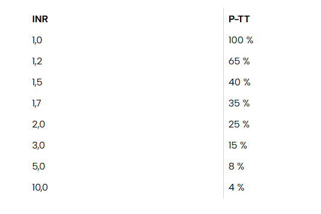
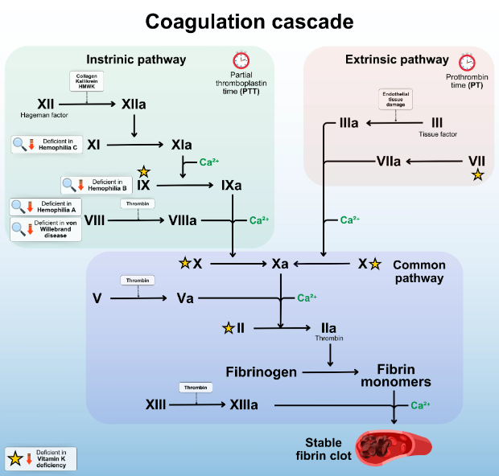
2.1.17 Sepsikselle altistavista tekijöistä
- Tärkein on obesiteetti
- iv-huumeiden käyttö liittyy erityisesti E-colin aiheuttamiin sepsiksiin
- Kortikosteroidit immunosupressiivisena lääkityksenä on merkittävä riskitekijä
- Alkoholismi lisää vain E. coli -sepsisten riskiä
cImmunosuppressio (esim. juuri kortikosteroidihoidossa) altistaa potilaan herkästi infektioille, ja heikentyneen immuunivasteen vuoksi paikalliset infektiot pääsevät helpommin leviämään verenkiertoonkin.
a: Vaikea liikalihavuus voi kyllä heikentää immuniteettia ja lisätä tiettyjen infektioiden riskiä. Se ei kuitenkaan ole tärkein syy; merkittävämpiä ovat mm. korkea ikä, vaikeat perussairaudet (esim. diabetes, CKD, maksan vajaatoiminta) ja immuunipuolustusta heikentävät tilat ja lääkitykset.
b: Koska bakteerit pääsevät verenkiertoon suoraan ihon läpi neulan välityksellä, tyypillisimmät aiheuttajat ovat ihon omia bakteereita, kuten Staphylococcus aureus. E. coli on gramnegatiivinen suolistobakteeri eikä se ole samalla tavalla iv-huumeiden käyttäjien tyyppipatogeeni.
d: Runsas alkoholin käyttö heikentää immuunijärjestelmää laajasti ja altistaa näin monille eri patogeeneille, ei vain E.coli-sepsiksille2.1.18 VTI:n hoito (pyelonefriitti)
- Ensisijainen valmiste on ESBL E. colien lisääntymisen vuoksi nykyään imipeneemi tai meropeneemi
- Nykyään katsotaan hoidon pituudeksi riittävän lähes kaikissa tapauksissa 5vrk
- Fluorokinolonia voidaan käyttää koko kuurin ajan suun kautta otettuna
- Pyelonefriitin hoito on aina aloitettava suonensisäisellä valmisteella
cHyväkuntoinen pyelonefriittipotilas soveltuu kotihoitoon, jossa ensisijainen lääkevalinta on p.o. fluorokinoloni (ensisijaisesti siprofloksasiini); hoitoaika on 5-7vrk naisilla ja 10-14vrk miehillä. Fluorokinolonille resistenttien patogeenien vuoksi virtsaviljelyvastauksen tarkistaminen on erityisen tärkeää niillä pyelonefriittipotilailla, joille on aloitettu empiirinen fluorokinolonihoito.
Kun tablettihoito ei ole mahdollinen (huonokuntoinen potilas) pyelonefriitin hoidossa, tulee hoito toteuttaa sairaalassa, jossa ensisijainen empiirinen lääke on i.v. kefuroksiimi 1,5g x 3 iv. Ennen mikrobilääkkeen aloittamista suositellaan veriviljelyiden ottoa vahvistamaan diagnoosia. Vasteen ilmaannuttua jatkohoitona suun kautta (myös i.v. mahdollisuus) otettava fluorokinoloni, ensimmäisen polven kefalosporiini, amoksisilliini-klavulaanihappo tai sulfa-trimetopriimi. Jos kerran vuorokaudessa lihakseen tai laskimoon annettavista ruiskeista on erityistä etua, voidaan valita keftriaksoni.
a: Laajakirjoista beetalaktamaasia tuottavien (ESBL) E. coli -kantojen suhteellinen osuus on Suomessa naisilla kaikissa ikäryhmissä virtsanäytteissä noin 3 %. ESBL-kantajalla ertapeneemi on yleensä empiirinen hoito. Karbapeneemejä ei kuitenkaan vielä käytetä empiirisenä hoitona kaikilla potilailla. ESBL huomioidaan empiirisessä aloitushoidossa valitsemalla karbapeneemiryhmän lääke ainoastaan erittäin huonokuntoisille potilaille, joilla epäillään pyelonefriittiä, tai korkeakuumeisille ja sairaille potilaille, joilla on selkeitä ESBL-kannoille altistavia tekijöitä (esim. aikaisempi ESBL-kannan eristys, edeltävä matkailu Euroopan ulkopuolella, edeltävä fluorokinolonien/beetalaktaamien käyttö). ESBL-kantajallakin empiirinen hoito vaihdetaan myöhemmin kapeakirjoisemmaksi viljelytuloksen mukaan.
b: Veriviljelypositiviisissa pyelonefriiteissä fluorokinoloneilla on näyttöä 7 vuorokauden riittävyydestä, mutta ei 5 vuorokauden riittävyydestä. 5vrk hoidosta on ollut hyväkuntoisilla potilailla näyttöä, mutta lähinnä vain levofloksasiinilla (750mg x1). Siprofloksasiinilla tutkimukset on tehty lyhimmillään 7 vuorokauden kuurilla. Levofloksasiinin tuloksia voitaneen kuitenkin soveltaa myös siprofloksasiiniin.
d: Ei ole pakko aina aloittaa iv-hoidolla. Hyväkuntoinen potilas soveltuu kotihoitoon ja voidaan hoitaa suun kautta otettavalla lääkityksellä. Sairaalassakin hoito voidaan potilaan kunnon mukaan toteuttaa joko laskimoon annettavalla kefuroksiimilla tai suun kautta otettavalla fluorokinolonilla. Kefuroksiimi on fluorokinoloneja kapeakirjoisempi ja sen haittavaikutukset ovat harvinaisempia, joten sairaalahoidossa sitä voi kuitenkin pitää ensisijaisena lääkkeenä. Kefuroksiimihoito voidaan vaihtaa suun kautta otettavaan toisen lääkkeeseen, kun kliininen vaste on muutamassa vuorokaudessa saavutettu ja bakteerin herkkyys on tiedossa.
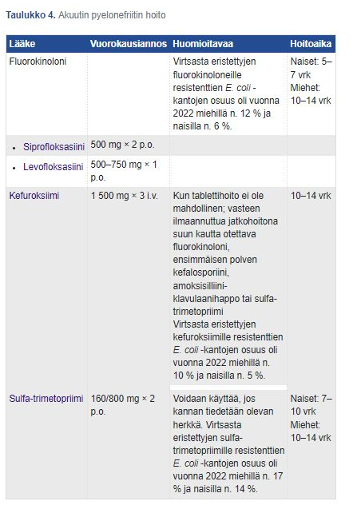
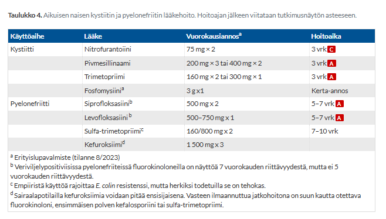
2.1.19 Keskushermostoinfektioista
- Meningiitin diagnoosiin vaaditaan selkäydinnestenäyte
- Aiheuttajaa ei voida saada selville veriviljelystä
- Purulentti meningiitti on yleisempi kuin lymfosytäärinen meningiitti
- CRP erottelee virus- ja bakteerimeningiitin hyvin jos oireiston kesto on yli 2h
aMeningiitin eli aivokalvontulehduksen diagnostiikassa tärkein yksittäinen tutkimus on lannepistos ja likvorin analyysi. Sen perusteella voidaan diagnosoida tulehdus ja se myös auttaa aseptisen (pääasiassa virus) ja septisen (bakteeri) meningiitin erottelussa sekä taudinaiheuttajan selvittelyssä.
Oirekuvan perusteella virusmeningiitti ja bakteerimeningiitti eroavat pääasiassa vaikeusasteensa mukaan. Meningiitissä voi yleisesti esiintyä oireina mm. kuumetta, niskajäykkyyttä (meningismiä), valoarkuutta ja väsymystä, mutta bakteerimeningiitti voi myös aiheuttaa mm. laskevaa tajunnan tasoa . Jos esiintyy keskushermostoinfektion epäilyn yhteydessä sekavuutta ja tajunnantasonhäiriötä, on pääasiassa epäiltävä enkefaliittia, abskessia tai bakteerimeningiittiä, eikä virusmeningiittiä, jossa tajunta on tyypillisesti normaalia ja aivoparenkyymin affisioitumisen oireita ei todeta.
Bakteerimeningiittipotilaat ovat yleisesti myös paljon sairaamman oloisia, koska kyseessä on vaikea yleissairaus. Yleensä n. päivän sisällä oirekuva menee vaikeaksi; vrt. taas aseptiset meningiitit, joissa potilas voi olla hyvinkin hyvävointinen ja oireet kehittyvät hitaammin (yleensä parissa päivässä).
Diagnoosi varmistetaan likvortutkimuksella, mutta on hyvä huomioida, että pään TT on aiheellinen ennen likvorinäytteen ottoa meningiittiepäilyssä, jos on:
- Jos paine kallon sisällä on korkea obstruktiivisesta syystä johtuen, niin lannepiston aiheuttama paineen lasku selkäydinkanavassa voi imeä aivokudosta selkäydinkanavaan (aivopaine-eron takia) -> herniaatio. Mikäli kliinisen tutkimuksen ja pään TT:n perusteella kallonsisäinen paine ei ole koholla, voidaan lumbaalipunktio tehdä turvallisesti. Niissäkin tapauksissa, joissa kallonsisäinen paine on lievästi koholla, voidaan lumbaalipunktio harkinnan mukaan tehdä Trendelenburgin asennossa ohutta neulaa käyttäen
- Paikallisoire (esim. toispuoleinen halvaus, puhehäiriö tai pupillien kokoero) viittaa siihen, että aivoissa voi olla massaleesio -> herniaatioriski paineen muuttuessa punktiossa
- Tajunnan häiriö voi olla merkki aivojen laajasta turvotuksesta tai korkeasta paineesta -> herniaatioriski
- Kouristelun taustalla voi olla paikalliset leesiot tai tuumorit tai turvotus -> herniaatioriski
- Pitkittynyt/uusiutuva kuume / vaikea immuunipuutos -> epätyypillisiä infektioita mahdollisesti taustalla; esim. sieni-infektioiden tai toksoplasmoosin aiheuttamia “pesäkkeitä” (fokaalisia leesioita). Nämä taas muuttavat aivojen paine-dynamiikkaa ja tekevät lannepistosta riskialttiimman herniaation suhteen
Likvorinäytteestä tutkitaan aina mm. solut, proteiini, glukoosi + laaja bakteerien (nho, viljely) ja varaputkista yleensä virusten (nho) analyysrjä. Likvorin perusteella septisen meningiitin ja aseptisen meningiitin tärkeimpiä eroja ovat:
- Septisessä usein samea (kirkas ei poissulje), aseptisessä kirkas
- Septisessä yleensä n. 1000-5000 x106/l (selvästi koholla); aseptisessä <1000 (yleensä n. 20-200 x106/l eli lievemmin koholla)
- Septisessä granulosyyttivoittoinen, aseptisessä lymfosyyttivoittoinen)
- Septisessä >1000 (selvästi koholla), aseptisessä n. 500-800 mg/l (lievemmin koholla)
- Septisessä <2 mmol/l (selvästi matala), aseptisessä >2 mmol/l (normaali tai lievästi matala)
- Septisessä koholla (>2), aseptisessä normaali)
Bakteerimeningiittiepäilyissä tyypilliset diagnostiset selvittelyt ovat likvorinäyte + 2x veriviljelynäyte, joiden jälkeen heti aloitetaan mikrobilääkehoito ja deksametasoni
Hoito aloitetaan kuitenkin heti veriviljelyiden oton jälkeen, jos pään TT on aiheellinen ennen likvorinäytteen ottoa tai lannepisto on vasta-aiheinen (esim. B-Trom < 50). Niille potilaille, joiden tajunnan taso ei ole alentunut, silmäpohjien papillilöydös on normaali ja joilla ei ole fokaalioireita, voidaan usein tehdä lumbaalipunktio jo ennen pään kuvantamista. Kaikille muille potilaille, joilla on vahva meningiittiepäily (etenkin, jos on mahdollista, että kallonsisäinen paine on koholla), voidaan menetellä siten, että otetaan veriviljelyt ja aloitetaan empiirinen mikrobilääke- ja deksametasonihoito jo ennen tietokonetomografiaa.
Aikuisilla yleisimmät bakteerimeningiitin aiheuttajat ovat meningokokki ja streptokokki; näiden jälkeen yleensä listeria yleisyyslistalla). Bakteerimeningiittiepäilyssä empiirinen mikrobilääkitys on keftriaksoni 2 g x 2 iv + vankomysiini 1 g (15mg/kg) x 2 iv + tarvittaessa myös listeriariskissä oleville (>50v/alkoholisti/immunosuppressoitu/diabetes/maksakirroosi yms) ampisilliini 2g x 6 iv. Deksametasoni aloitetaan bakteerimeningiittiepäilyssä tyypillisesti ennen ensimmäistä mikrobilääkeannosta tai yhtäaikaisesti sen kanssa. Tehtävä on hillitä aivojen tulehdustilaa ja laskea aivopainetta (vähän). Käyttö perustuu siihen tietoon, että bakteerien endotoksiinien laukaisema inflammaatio – siis sytokiinimyrsky – on vahingollisempi kuin bakteerit sinänsä. Mikrobilääkkeen nopea annosteleminen hajottaa runsaasti bakteereja pahentaen näin sytokiinimyrskyä. Noin 15-30 minuuttia ennen mikrobilääkettä annettu deksametasoni saattaa jarruttaa tätä inflammaatiokaskadia. Deksametasoni vähentää myös BBB läpäisevyyttä. Jos aiheuttaja on jokin muu kuin pneumokokki, lopetetaan deksametasoni (muuten annetaan 4vrk ajan).
Virusmeningiitissä taas yleisimmät aiheuttajat ovat enterovirukset (esim. coxsackie- ja echo-virukset; näitä eniten loppukesän ja alkusyksyn aikoihin). HSV-2 ja VZV (VZV-vyöruusun yhteydessä) myös tärkeitä. Virusmeningiitissä hoito on pääsääntöisesti oireenmukainen eli kipulääkitys (NSAID), pahoinvointilääkitys (esim. metoklopramidi) ja iv-nesteytys tarvittaessa. Etiologian selventyessä mahdollisesti sen mukainen hoito (esim. HSV:n tai VZV:n tapauksessa asikloviiria voi harkita). Hoitopaikka voinnin mukaan; sairaalahoito on vain harvoin tarpeen.
b: Bakteerimeningiitissä (kuten pneumokokin tai meningokokin aiheuttamassa) bakteeri on hyvin usein levinnyt verenkiertoon ja veriviljely on positiivinen jopa yli 50–70 %:lla potilaista. Siksi veriviljelyt otetaan aina välittömästi, kun herää epäily keskushermostoinfektiosta, ja ne voivat paljastaa aiheuttajan, vaikka selkäydinnesteen viljely jäisi negatiiviseksi (esimerkiksi jos mikrobilääkitys on ehditty aloittaa ennen punktiota).
c: Aseptinen eli lymfosytäärinen meningiitti on yleisin keskushermoston akuutti infektio (noin 20–40/100 000 vuodessa, mutta tarkka lukumäärä ei ole tiedossa ja saattaa olla mainittua suurempi). Vrt. septinen meningiitti (bakteerimeningiitti), joka on toiseksi yleisin (Suomessa noin 5–10/100 000 vuodessa).
d: CRP ei yleisesti ole hyvä mittari aivan akuutimmissa vaiheissa, koska CRP:n tuotannossa kestää. Äkillisessä, rajusti alkaneessa bakteerimeningiitissä CRP voi ensimmäisten tuntien aikana olla täysin normaali tai vain lievästi kohonnut.
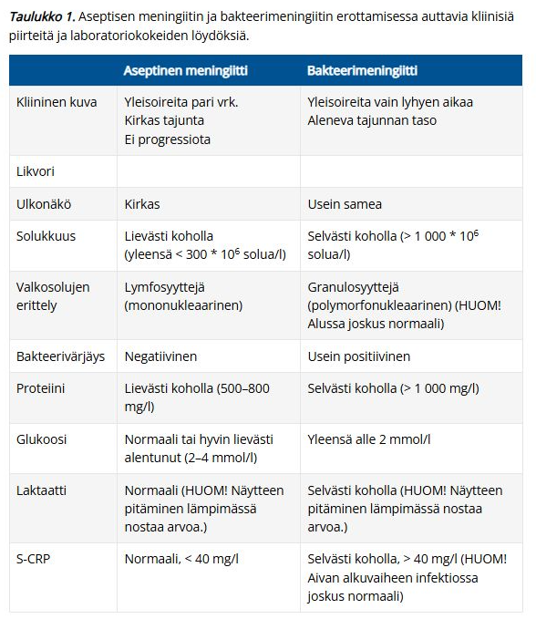
2.1.20 Jos vuorokauden kuluttua pneumonian antibioottihoidon aloittamisesta CRP ei ole laskenut, yleensä
- Antibioottia pitää vaihtaa
- Nostetaan antibiootin annosta
- Aloitetun antibiootin oheen aloitetaan toinen hoitoa tehostava antibiootti
- Jatketaan aloitetun antibioottihoidon kanssa
dKeuhkokuumetta ja sen vahvaa epäilyä hoidetaan aina mikrobilääkityksellä. Koska etenkin pneumokokin aiheuttama keuhkokuume saattaa olla nopeasti kehittyvä ja rajuoireinen henkeä uhkaava tauti, mikrobilääkehoito tulee aloittaa, jos kliininen epäily keuhkokuumeesta on vahva, vaikka keuhkokuva olisi toistaiseksi normaali tai sitä ei ole saatavissa.
Jos kyseessä epäily kotisyntyisestä pneumoniasta ja potilas vaatii sairaalahoitoa (esim. DS-CRB-65-työkalulla arvioituna), niin yleensä aloitetaan kefuroksiimi 1,5g x3-4/vrk iv. Myöhemmin voidaan siirtyä varsinkin työikäisillä G-penisilliiniin, kun keuhkokuumediagnoosi varmistuu ja aiheuttaja on pneumokokki. Kun halutaan kattaa keuhkoklamydia, Legionella tai mykoplasma, hoitoon voidaan liittää esim. makrolidi tai doksisykliini. Suonensisäisen hoidon jälkeen käytetään kotona hoidettavan keuhkokuumeen lääkkeitä. Suun kautta annettavaan lääkitykseen tulisi siirtyä potilaan tilan parantuessa ja stabiloituessa mahdollisimman pian – usein jo muutamien päivien kuluttua.
Jos potilas pärjää kotihoidossa, niin ensisijainen lääkitys on amoksisilliini 1gx3 tai 750mgx3-4 po. Se ei kuitenkaan kata keuhkoklamydiaa eikä mykoplasmaa.
Ellei potilaan tila parane ensisijaisen lääkityksen aikana 2–4 päivän kuluessa, suositellaan lääkehoidon täydentämistä keuhkoklamydian ja mykoplasman kattavalla mikrobilääkityksellä.
Mikrobilääkehoidon kesto on vähintään 5 vuorokautta, ja ennen mikrobilääkityksen lopettamista potilaan tulee olla 2–3 vuorokautta kuumeeton. Jos potilaalla on merkkejä vaikeasta infektiosta tai hänellä on merkittäviä muita sairauksia, tulee harkita pidempää hoitoa.
a: Liian aikaisin vaihto
b: Jos antibiootti on aloitettu oikealla, ohjeiden mukaisella terapeuttisella annoksella, annoksen nostaminen ei paranna tehoa
c: Toinen antibiootti tarvitaan, jos epäillään atyyppistä aiheuttajaa tai on riski sellaiselle; ei tarvita rutiinisti


2.1.21 Rotavirusripuli
- On yleisin epidemioiden aiheuttaja laitoksissa
- Aiheuttaa yleensä verisen ripulin
- On itämisajaltaan yleensä 3-5vrk
- On aikuisilla harvinainen
dRotavirusinfektio todetaan tyypillisesti nuorilla lapsilla. Kliininen tauti yleinen yli puolivuotiailla lapsilla, aikuisilla harvinainen. Määrät vähentyneet runsaasti rokotteiden tultua kansalliseen rokoteohjelmaan (lapset rokotetaan 2, 3 ja 5 kk:n iässä rotavirusta vastaan). Rokote ei ole hävittänyt rotavirusta kokonaan, mutta vaikeat, nestehoitoa vaativat tapaukset ovat vähentyneet merkittävästi.
a: Vanhainkodeissa joskus esiintyy epidemioita, mutta yleisin on norovirus.
b: Rotavirus aiheuttaa tyypillisesti vesiripulin. Verinen ripuli viittaa yleensä invasiivisiin bakteereihin, kuten kampylobakteeriin, shigellaan tai EHEC-bakteeriin
c: Rotaviruksen itämisaika on lyhyempi, yleensä n. 2 vuorokautta. Oireina vetinen ripuli, kuume ja oksentelu. Kestää yleensä alle 5 vrk, minkä jälkeen virusta erittyy ulosteeseen vielä n. viikon ajan.
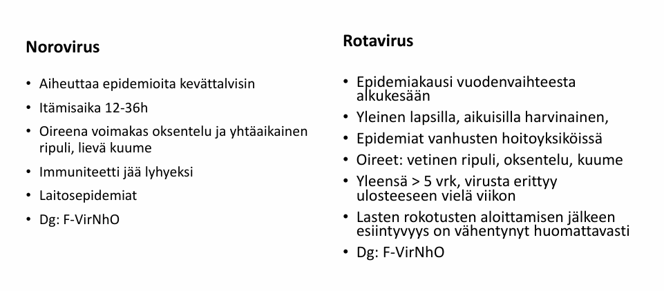
2.1.22 Zoonoosilla tarkoitetaan
- Resistenttien bakteerien tarttumista eläimistä ihmisiin
- Vektorivälitteisiä infektioita
- Eläimillä olevia infektioita
- Eläimiltä ihmisiin tai ihmisiltä eläimiin tarttuvia infektioita
dZoonoosi on mikä tahansa tauti tai infektio, joka voi luonnollisella tavalla siirtyä selkärankaisista eläimistä ihmisiin tai päinvastoin (ihmisestä eläimeen siirtyvää tautia kutsutaan joskus tarkemmin käänteiseksi zoonoosiksi tai antroponoosiksi). Zoonoosit voivat tarttua suoraan tai välillisesti eläimen ja ihmisen välillä. Välillinen tartunta voi tapahtua esimerkiksi elintarvikkeiden, veden tai hyönteisten välityksellä. Esimerkkejä ovat esim. myyräkuume (Puumala-virus), rabies, borrelioosi, jänisrutto (tularemia) ja puutiaisaivokuume (TBE).
a: Zoonoosin määritelmä ei rajoitu vain resistentteihin bakteereihin
b: Monet zoonoosit ovat kyllä vektorivälitteisiä (eli ne tarvitsevat väli-isännän, kuten puutiaisen tai hyttysen, siirtyäkseen eläimestä ihmiseen, kuten borrelioosi). Kaikki zoonoosit eivät kuitenkaan vaadi vektoria; ne voivat tarttua myös suorassa kosketuksessa eläimeen, pureman kautta (vesikauhu) tai inhalaatioteitse eläimen eritteistä (myyräkuume).
c: Jos infektio tai esiintyy ainoastaan eläimillä eikä se pysty missään olosuhteissa siirtymään ihmiseen, se ei ole zoonoosi.2.1.23 Matkustukseen liittyvät sukupuolitaudit - erityisesti HIV
- Eivät vähenisi kondomien maksuttomuuden seurauksena
- HIV:n suhteen vasta-ainetutkimus ensitautivaiheessa on korkeasti positiivinen laskien sitten vuosiksi matalammalle tasolle
- Keskittyvät eniten Thaimaan matkailijoihin, Venäjän ja Viron käviöihin sekä Espanjan lomailijoihin
- Ovat vähentyneet viime vuosina tehokkaan valistuksen ansiosta
c2017 aineiston mukaan tartunnoista nykyään 77 % saatu ulkomailla (suomalaisilla miehillä etenkin Thaimaa). Noin 65 % tartunnoista todetaan miehillä (suomalaisista noin 80% miehillä) ja miesten tartunnoista n. 50% tapahtuu homoseksin välityksellä.
Suomessa on lähes 5000 HIV-positiiviseksi diagnosoitua henkilöä kaikkiaan. Noin 500 henkilöä on saanut tartunnan, mutta ei tiedä sitä. Vuosittain 170-180 uutta HIV-infektiota.
a: Kansanterveystieteellinen ja epidemiologinen näyttö osoittaa, että esteiden (kuten hinnan ja saatavuuden) poistaminen ehkäisyvälineiltä lisää niiden käyttöä. Tämä sitten tietysti vähentää sukupuolitautien, myös HIV:n, leviämistä.
b: Ensitautivaiheessa (akutissa primaari-infektiossa, noin 2–4 viikkoa tartunnasta) elimistö ei ole vielä ehtinyt muodostaa riittävästi vasta-aineita, joten pelkkä vasta-ainetutkimus on usein negatiivinen. Negatiivista testiä pidetään luotettavana, kun se on otettu kolmen kuukauden kuluttua riskitilanteesta.
d: HIV-tartuntojen kohdalla suurin lasku ja muutos epidemian hallinnassa ei johdu pelkästään valistuksesta, vaan PrEP-lääkityksen (altistumista edeltävä estohoito) yleistymisestä ja siitä, että tehokkaalla HIV-lääkehoidolla (ART) olevat potilaat saavutetaan mittaamattoman matala virustaso, jolloin he eivät enää tartuta virusta eteenpäin. HIV-epidemian aiheuttama työtaakka terveydenhuollolle on lisääntynyt ennusteen parantuessa, mutta tulevaisuudessa se vähenee, kunhan aktiivista työtä jatketaan.
2.1.24 C. Difficile -infektion hoidossa
- Vankomysiini on metronidatsolia jnkv huonotehoisempi hoito, mutta sitä joudutaan interaktion vuoksi käyttämään Marevan-hoitoa saavilla potilailla metronidatsolin sijaan
- Metronidatsolia ei enää suositella ensisijaiseksi hoidoksi
- Fidaksomisiini on vankomisiinia nopeampaa tulokseen johtava hoito
- Ulosteensiirron tulokset uusivassa c. Diff-infektiossa ovat fidaksomisiinia paremmat
dC. Difficile -infektio (CDI) ilmenee vetisenä, vihertävänä ja joskus verisenäkin ripulina; tyypillisesti aikaisemman mikrobilääkekuurin altistamana (harvemmin ilman edeltävää hoitoa). Ripuli alkaa joskus jo vuorokauden kuluessa mikrobilääkekuurin aloituksesta, joskus vasta viikkojen kuluttua. Ripuliin liittyy usein vatsakipuja ja vatsan kouristuksia sekä kuumetta. Vaikeimmat muodot, kuten pseudomembranoottinen koliitti tai toksinen megakoolon, voivat olla hengenvaarallisia. Diagnoosi perustuu bakteerin toksiinin osoittamiseen ulosteesta geenimonistustestillä F-CldTNhO. Testi on erittäin herkkä ja voi olla positiivinen ilman kliinistä tautiakin. Testi tulee tehdä vain potilaalle, jolla kliinisesti epäillään C. difficile-infektiota. Geenimonistustestiä ei tule käyttää hoitovasteen seurantaan: se voi pysyä pitkään positiivisena parantuneen C. difficile -infektion jälkeen.
Lievässä taudinkuvassa voi mikrobilääkkeen lopettaminen riittää hoidoksi, mutta usein tarvitaan mikrobilääkitystä (kts. suositukset mikrobilääkeoppaasta alla; samassa myös ohjeet uusiutuvasta CDI:stä). Nestehoito toteutetaan ripulin vaikeusasteen ja potilaan yleistilan mukaan. Suolen toimintaa hidastavien lääkkeiden käyttöä (esim. loperamidi, opioidit) tulee välttää.
Ulosteensiirrossa siirretään luovuttajalta saatua suolen mikrobistoa pyrkimyksenä korjata uusiutuviin C. difficile-infektioihin johtava suoliston mikrobiomin häiriö. Toistaiseksi ulosteensiirto suoritetaan kolonoskopian avulla. Ulosteensiirto (FMT) on erittäin tehokas (parantaa yli 90 % uusivista infektioista), mutta sitä käytetään vasta silloin, kun infektio uusiutuu toistuvasti (esim. jo kahden residiivin jälkeen) lääkehoidoista huolimatta.
a: Vankomysiini on metronidatsolia tehokkaampi hoito. Lisäksi suun kautta otettava vankomysiini ei imeydy lainkaan suolistosta verenkiertoon, joten sillä ei ole systeemisiä lääkeinteraktioita esimerkiksi varfariinin (Marevan) kanssa. Metronidatsoli taas imeytyy systeemisestikin ja se nimenomaan voimistaa Marevanin tehoa pidentäen INR-aikaa vaarallisesti.
b: Nuoren potilaan (alle 65v) lievässä CDI:ssä voidaan vieläkin käyttää metronidatsolia 400mg x3 po 10vrk ajan ensilinjan hoitona. Kansainvälisissä suosituksissa metronidatsolia ei enää yleisesti suosita, mutta suomalaisissa mikrobilääkeoppaissa metronidatsoli on vielä ensilinjan hoitoa. Mikäli metronidatsoliin ei saada vastetta 3-4vrek:ssa, vaihdetaan vankomysiiniin po.
Uusineessa CDI:ssa ei kuitenkaan metronidatsolia enää suositella edes nuoremmalle ikäryhmälle!
c: Fidaksomisiini ei paranna potilasta merkittävästi nopeammin kuin vankomysiini (molemmat tehoavat akuutteihin oireisiin suurin piirtein samassa ajassa). Fidaksomisiinin etu vankomysiiniin nähden on sen kapeakirjoisuus: se säästää suoliston normaalia bakteeriflooraa paremmin, minkä vuoksi taudin uusiutumisriski on merkittävästi pienempi.
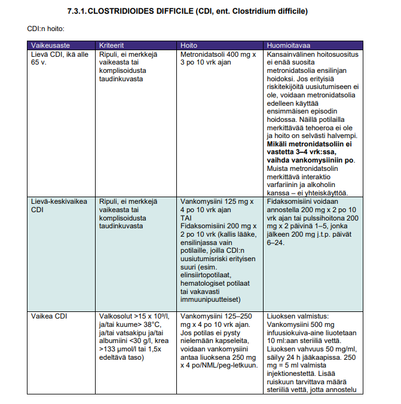
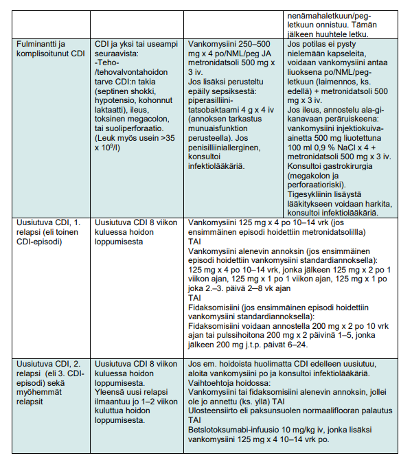
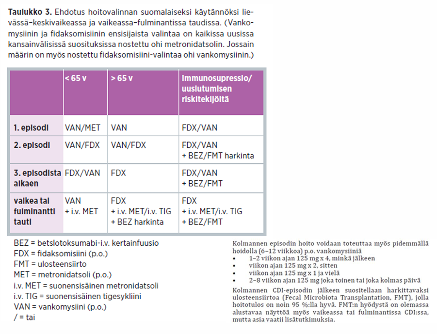
2.1.25 Lymen borrelioosin yleisin manifestaatio erythema migransia lukuunottamatta on
- Facialispareesi ja / tai Bannwarthin meningoradikultiitti
- II-III asteen AV-katkos
- Lymen artriitti
- Acrodermatitis chronica atroficans
aLymen borrelioosin yleisin ilmentymä on erythema migrans (vaeltava punoitus), ja tavallisin levinnyt tautimuoto on Lymen neuroborrelioosi (LNB). Neuroborrelioosin yleisin oire aikuisilla Euroopassa on meningoradikuliitti ja toiseksi yleisin facialispareesi. Terminologia vaihtelee lähteiden välillä, mutta usein Bannwarthin oireyhtymä on meningoradikuliitti, kun taas joskus Bannwarthin oireyhtymä juuri tarkoittaa meningoradikuliittia+facialispareesia.
Meningoradikuliitti tarkoittaa meningien (aivojen ja selkäytimen kalvojen) ja hermojuurien tulehdusta, joka ilmenee yleensä vaikeana kipuna, puutumisena ja motorisina heikkouksina. Meningoradikuliitissa kivun voimakkuus ja paikka voivat vaihdella. Kipu paikantuu usein reiteen, vatsaan, selkään tai niska-hartiaseutuun, mutta se voi sijaita missä tahansa keholla. Tyypillisesti kipu voimistuu öisin, jopa niin että jotkut potilaat kertovat nousseensa öisin suihkuun oireita lievittääkseen. Radikulaarinen oireisto voi olla myös motorispainotteinen, mutta sensorinen oireisto on selvästi yleisempi.
Bannwarthin oireyhtymään liittyy usein lymfosytaarinen meningiitti sekä perifeerisen hermon halvaus. Perifeerisen hermon halvauksista yleisin on kasvohermohalvaus, mutta mikä tahansa aivohermo tai muu perifeerinen hermo saattaa sairastua. Aivohermon halvaus voi olla myös molemminpuolinen. Harvinainen akuutti keskushermoston parenkyymin infektio voi ilmetä enkefaliittina tai myeliittinä.
b: Sydänborrelioosi (Lymen kardiitti) on suhteellisen harvinainen komplikaatio. Vaikka korkea-asteinen eteis-kammiokatkos (AV-katkos) on sen tunnetuin ja tyypillisin ilmenemismuoto, se on kokonaisuutena selvästi harvinaisempi kuin hermostomuutokset.
c: Nivelborrelioosi (artriitti) on myöhäisborrelioosin tyyppi, joka ilmenee inflammatorisena monoartikulaarisena tai asymmetrisenä oligoartikulaarisena niveltulehduksena; useimmiten affisioitunut nivel on polvi. Lymen artriitti on yleisin myöhäinen Lymen taudin ilmentymä. Jos primaarivaihetta ei hoideta, voi ilmaantua n. 3–5 %:lle muutamia viikkoja tai kuukausia (keskimäärin 6 kk) puutiaisen pureman jälkeen.
d: Myöhäisvaiheen borrelioosissa voi ilmaantua hitaasti etenevä surkastuttava ihotulehdus eli acrodermatitis chronica atrophicans (akrodermatiitti, ACA).
2.1.26 Tularemia
- Taudinkuva on hyvin samankaltainen kuin anthraxin eli pernaruton
- taudinkuva on yleisimmin iholeesio + alueellisesti suurentuneet imusolmukkeet
- Taudinkuvaan kuuluu muiden mainittujen lisäksi useimmiten respiratorinen oireisto
- Voi saada Suomessa yhtä hyvin hyttysenpistosta kuin puutiaisen pistostakin
bTularemia eli jänisrutto johtuu Francisella tularensis -infektiosta. Yleisin välittäjä on Suomessa hyttysen pisto (Manner-Euroopassa vektoreina toimivat Dermacentor reticulatus- ja Ixodes ricinus -puutiaiset). Joskus harvoin voi myös tarttua suoraan varastoeläimestä (mm. sairasta eläintä käsiteltäessä, syötäessä huonosti kypsennettyä infektoituneen eläimen lihaa tai eläimen puremasta) ja joskus myös kontaminoituneesta vedestä tai maaperästä tai aerosolina riistaa tai jyrsijöitä käsiteltäessä tai heinäpölyistä (voidaan tästä syystä myös käyttää mahdollisesti bioaseena). Ei tartu ihmisestä toiseen. Itämisaika on n. 1-14vrk (yleensä 3-5vrk).
Jänisruttoa esiintyy vain pohjoisella pallonpuoliskolla ja taudin ilmaantuvuus on erityisen suuri Suomessa ja Ruotsissa (tularemia-vasta-aineita 2 %:lla suomalaisista aikuisista). Suomessa todetaan säännöllisesti suuria epidemioita, joissa sairastuu satoja, jopa tuhansia henkilöitä. Epidemiat kuitenkin rajoittuvat vain joillekin paikkakunnille, tyypillisesti Pohjanmaalle ja Keski-Suomeen.
Tyypillinen (n. 80-90%) taudinkuva on ulseroglandulaarinen tularemia, jossa infektiokohtaan muodostuu kivulias märkivä haavauma, jolla on nekroottinen pohja. Leviää tästä paikallisiin imusolmukkeisiin ja aiheuttaa siellä kaseoivia granuloomia (ilmenee ulkoisesti paikallisesti turvonneina ja arkoina imusolmukkeina). Samalla ilmaantuu usein sekundaarisia ihomuutoksia; syntyvät immunologisesti. Eksanteema (ihottumaa; n. 20% potilaista) ilmaantuu tyypillisesti taudin kuumevaiheen aikana.
Harvinaisempia muotoja ovat mm:
Tautimuodon kliininen diagnoosi on helpoin tyypillisen taudinkuvan ja paikkakunnan epidemiologisen tilanteen perusteella. Mikrobiologisesti tartunta voidaan varmistaa vasta-ainemäärityksen (S-FrtuAb) avulla. Vasta-aineita on mitattavissa vasta 1–3 viikon kuluttua oireiden alusta, joten sairauden alkuvaiheissa ei serologisen testin negatiivinen tulos sulje tularemian mahdollisuutta pois. Pariseeruminäytteet otetaan 2–3 viikon välein. Olemassa on myös PCR-tutkimus, jolla tartunta voidaan todeta nopeasti. Tutkimuksen saatavuus on kuitenkin rajallinen.
Tularemian hoidoksi suositellaan tyypillisesti siprofloksasiini 500–750 mg x 2 po tai vaihtoehtoisesti doksisykliini 100 mg x 2 po. Hoidon kesto 10–14 vrk. Vaikeissa tautimuodoissa ja gravideilla aminoglykosidi: ensisijaisesti streptomysiini 1 g x 2 iv/im 7─10 vrk tai vaihtoehtoisesti gentamysiini 1,5 mg/kg x 3 iv. On hyvä tiedostaa, että beetalaktaamit eivät tehoa tularemiaan.
a: Vaikka molemmat ovat eläimistä tarttuvia vakavia bakteeritauteja ja molemmissa voi esiintyä ihohaavaumia, niiden kliininen kuva ja kulku eroavat merkittävästi. Pernaruton (Bacillus anthracis) aiheuttama ihomuutos on tyypillisesti kivuton, musta kuoliomainen karsta (eschar), johon liittyy laaja-alainen, hyytelömäinen turvotus (ödeema) ihottuman ympärillä. Tularemian haava on yleensä pienempi ja kraaterimaisempi, ja siihen liittyy paljon rajumpi paikallinen imusolmukereaktio kuin pernaruttoon.
c: Keuhkotularemia (pneumoninen muoto) on mahdollinen, mutta harvinainen tautimuoto
d: Suomessa tularemia tarttuu kesäisin ja alkusyksystä ylivoimaisesti useimmiten hyttysten pistoista (sekä joskus paarmat). Puutiainen (punkki) voi teoreettisesti kantaa ja levittää bakteeria, mutta tämä on Suomen oloissa äärimmäisen harvinaista (tyypillisempää Manner-Euroopassa ja Pohjois-Amerikassa).
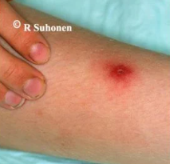
2.1.27 Bakteeriripulitaudin empiirinen antibioottihoito
- Määräytyy yleensä kliinisen kuvan mukaan
- Määräytyy yleensä veriviljelytuloksen perusteella
- Määräytyy yleensä ulosteviljelytuloksen perusteella
- On kuumeisessa tapauksessa välttämätön
aEmpiirinen yleisesti tarkoittaa hoitoa, joka aloitetaan parhaan lääketieteellisen arvion perusteella ennen kuin aiheuttajamikrobi on tiedossa. Jos hoito määräytyisi viljelytulosten mukaan, niin silloin hoito olisi ns. kohdennettua.
Yleensä akuutissa ripulitaudissa ei tarvita mikrobilääkitystä. Hoitoratkaisuun vaikuttavat sekä epäilty taudinaiheuttaja että kliininen kuva. Onko kyseessä lievä vai vaikea tauti? Onko ripuli vetistä vai veristä (invasiivista)? Onko potilaalla korkea kuume, ja onko hän matkustanut äskettäin ulkomailla? Myös potilaan perussairaudet ja yleistila vaikuttavat tähän kliiniseen arvioon.
b ja c: Usein ei edes ole tarvetta ulostenäytteelle tai veriviljelyille. Voimakasoireisilta kyllä voidaan ottaa molempia. Virustutkimuksia tehdään yleensä vain epidemioita selvitettäessä. Ulosteen parasiitteja on useimmiten syytä tutkia vasta ripulitaudin pitkittyessä.
d: Pelkkä kuume ei automaattisesti tarkoita, että antibiootti on välttämätön. Kuume on tavallinen oire monissa itsestään paranevissa ripulitaudeissa, kuten virusripuleissa (esim. noro- tai rotavirus) tai lievissä bakteeriripuleissa (kuten lievä Salmonella tai Kampylobakteeri).2.1.28 Ruusu
- Paranee paikallisella antibioottivoiteella
- Hoidetaan ensijaisesti suun kautta otettavalla klindamysiinillä
- On tavallisimmin streptokokkus pyogeneksen aiheuttama
- Esiintyy useimmin käsivarressa
cHarvemmin myös esim. S. aureus voi aiheuttaa; varsinkin jos kyseessä on märkäinen syvempi infektio eli märkäinen selluliitti (ruusu eli erysipelas virallisesti on pinnallisempi, mutta usein sisältää käsitteenä myös selluliitin; raja ruusun ja selluliitin välillä on liukuva eikä niitä käytännön työssä erotella toisistaan). Nonpurulentti selluliitti taas olisi todennäköisesti A-ryhmän streptokokin (S. pyogenes) aiheuttama.
Useimmiten ruusutulehdus alkaa ihon rikkoumasta, jota kautta bakteeri pääsee ihon läpi. Valtaosa ruusuista esiintyy säären, nilkan ja jalkaterän alueella, mutta se voi ilmaantua myös ylärajaan, kasvoihin ja vartalolle. Ruusun tyyppioireet ovat äkillisesti alkanut korkea kuume ja vilunväristykset sekä tarkkarajainen, liekehtivä, kuumottava, yhtenäinen punoitus ja turvotus iholla. Ruusu on pääsääntöisesti toispuolinen eli esiintyy vain toisessa raajassa. CRP ja leuk tyyypillisesti nousevat.
a: Ruusun hoito aloitetaan pääsääntöisesti sairaalaympäristössä suonensisäisesti, jolloin ensisijainen ab-valinta on bentsyylipenisilliini (G-penisilliini). Vaikeusasteen mukaan (mikrobilääkkeen annos määritetään infektion vaikeusasteen, ei potilaan painon mukaisesti) 8 – 24 milj. KY /vrk jaettuna 4 – 6 annokseen. Suun kautta annettavaan lääkitykseen voidaan siirtyä heti, kun kuume on laskenut ja nähdään, että tulehdusalue ei enää laajene, yleensä jo muutaman vuorokauden kuluttua (fenoksimetyylipenisilliini (Vpen) 1-1,5 milj. KY x 3 – 4 (infektion syvyyden ja laajuuden mukaan)).
b: Voidaan käyttää penisilliiniallergisilla. Penisilliiniallergisen ruusutulehdukseen kefuroksiimi 1,5 g x 3–4 iv tai klindamysiini 300 mg x 4 / 450–600 mg x 3 iv tai po. Huom! septisessä infektiossa ei käytetä bakteriostaattista klindamysiiniä yksinään.
d: Voi esiintyä missä tahansa, mutta ylivoimaisesti yleisin esiintymispaikka on alaraaja. Tyypillinen reitti bakteerille on varvasvälin sieni-infektio (hankauma), rikkoutunut iho tai säärihaava.

2.1.29 Normaalin ihon mikrobisto
- Ihon puolustautuminen bakteereja vastaan perustuu aina hankittuun immuniteettiin
- Normaalilla iholla ja limakalvolla on hiivasieniä
- Iholla olevat bakteerit ovat yleensä haitallisia, koska ne aiheuttavat infektioita
- Stafylococcus aureusta ei ole normaalisti iholla
bTerveen ihon ja limakalvojen mikrobistoon (normaaliflooraan) kuuluu bakteerien lisäksi luonnostaan myös sieniä. Tyypillisin iholla elävä hiivasienisuku on Malassezia, joka käyttää ravinnokseen ihon talirauhasten rasvoja. Limakalvoilla, kuten suussa ja emättimessä, elää pienenä osana normaaliflooraa myös Candida albicans -hiivasieni. Nämä ovat harmittomia niin kauan kuin elimistön puolustuskyky ja ihon/limakalvon tasapaino pysyvät normaaleina.
a: Ihon ensisijainen ja tärkein puolustus perustuu luonnolliseen (synnynnäiseen) immuniteettiin sekä mekaaniseen ja kemialliseen esteeseen.
c: Päinvastoin – iholla elävät normaaliflooran bakteerit (kuten Staphylococcus epidermidis) ovat yleensä harmittomia ja myös vievät elintilaa ja ravintoa haitallisilta mikrobeilta. Ne muuttuvat haitallisiksi vain, jos ihon suojakerros rikkoutuu tai potilaan immuunipuolustus pettää vakavasti.
d: Kuuluu merkittävällä osalla väestöstä normaaliflooraan ilman, että se aiheuttaa mitään oireita.2.1.30 Vyöruusu
- on tavallisempi nuorilla kuin iäkkäillä henkilöillä
- Aiheuttaa rakkuloita tavallisesti vain toisella puolella vartaloa
- aiheuttaa aina kovaa särkyä
- johtuu HSV-1 viruksen reaktivaatiosta
bIhottuma ja rakkulat rajoittuvat tarkasti unilateraalisesti yhden tai kahden vierekkäisen ihohermoalueen eli dermatomin alueelle. Tämä johtuu siitä, että virus lymyää sensorisissa ganglioissa, ja reaktivoituessaan se kulkee hermoa pitkin juuri sen kyseisen hermon vastaavalle ihoalueelle ylittämättä kehon keskilinjaa.
a: Vyöruusu on nimenomaan tyypillisesti iäkkäiden ihmisten sairaus. Sen ilmaantuvuus nousee jyrkästi 50 ikävuoden jälkeen, koska immuniteetti heikkenee luonnollisesti iän myötä. Nuorilla vyöruusu on selvästi harvinaisempi, ja jos sitä esiintyy nuorella iällä, se herättää usein epäilyn taustalla olevasta immuunipuolustuksen häiriöstä.
c: Vaikka vyöruusuun liittyy hyvin usein voimakas, polttava tai repivä hermokipu (neuralgia), tauti voi toisinaan olla hyvinkin vähäoireinen tai lievästi kutiseva.
d: Vyöruusun aiheuttaa VZV-virus (Varicella zoster-virus), joka on vesirokkovirus. Ensitartunta lapsuudessa aiheuttaa vesirokon, minkä jälkeen virus jää pysyvästi asumaan elimistön hermoganglioihin ja vyöruusu on tämän saman vesirokkoviruksen uudelleenaktivoituminen.

2.1.31 Potilastapaus
Perusterveellä nuorella naisella on ollut 3 päivää kuivaa yskää ja lämpöä 37.8 astetta. Yleisvointi on hyvä. Veren happikyllästeisyys on 96%. Keuhkojen röntgenkuva sopii lohkokeuhkokuumeeseen. CRP on 80mg/l. Mikä on oikea hoitopaikka ja hoito?
- Sairaala, kefuroksiimi 1,5g x 3 i.v.
- Sairaala, moksifloksasiini 400 mg x 1 i.v.
- Koti, amoksisilliini 750mg x 3 p.o.
- Koti, amoksisilliini 750mg x 2 p.o.
cKeuhkokuumepotilaan sopivan hoitopaikan arviossa voi käyttää keuhkokuumeen vaikeusastetta kuvaavaa DS-CRB-65-työkalua. Sen muodostaa:
Jos DS-CRB-65-pisteitä on 1 tai enemmän, vaikeaa keuhkokuumetta tulisi epäillä ja vuodeosastohoidon tarvetta harkita. Kun pistemäärä suurenee, suurenevat myös tehohoidon tarve ja kuolleisuus eli tauti on vaikeampi. Keuhkokuumepotilaat, joiden DS-CRB65-pisteet ovat 0 soveltuvat todennäköisesti kotihoitoon.
Potilas on nuori, hyvävointinen ja happikyllästeistyys on normaali eikä CRP:kään ole hälyttävän korkea. Potilas soveltuu kotihoitoon. Lohkokeuhkokuumeen kotihoidossa ensisijainen lääkitys on amoksisilliini 750mg-1g x3. Jos potilas olisi huonovointisempi ja kuuluisi osastolle, niin siellä ensisijainen olisi yleensä kefuroksiimi (ainakin epävarmassa vaiheessa) tai G-penisilliini (mahdollisesti, kun on lohkokeuhkokuume ja potilas on hyväkuntoinen työikäinen).
2.1.32 Tuberkuloosipotilas pitää eristää ilmaeristyshuoneeseen sairaalassa
- Keuhkotuberkuloosissa silloin, jos ysköksen tuberkuloosivärjäys on positiivinen, tai keuhkokuvassa on ontelo
- vain, jos potilaalle ei pystytä järjestämään erillistä huonetta kotona
- aina taudin alussa vähintään 2 viikon ajaksi
- aina kunnes viljelytulokset valmistuvat ja tiedetään, että kanta on lääkeherkkä
aTuberkuloosi tarttuu ilmateitse aerosolien välityksellä, ja tartuttavuus riippuu siitä, kuinka paljon potilas erittää bakteereita ilmaan yskiessään. Jos ysköksen värjäys on positiivinen, potilaan ysköksissä on erittäin suuri määrä bakteereita, ja hän on erittäin tartuttava. Samoin keuhkokuvassa tai tietokonetomografiassa näkyvä ontelo merkitsee keuhkokudoksen kuoliota, jossa tuberkuloosibakteerit pääsevät lisääntymään vapaasti ja josta ne pääsevät suoraan keuhkoputkiin. Tällaiset potilaat on ehdottomasti eristettävä sairaalassa alipaineistettuun ilmaeristyshuoneeseen henkilökunnan ja muiden potilaiden suojaamiseksi.
b: Tartuttavaa tuberkuloosia sairastavaa potilasta ei voida hoitaa kotona pelkässä omassa huoneessa, sillä kotiolosuhteissa ilmanvaihto ei estä aerosolien leviämistä muualle asuntoon ja perheenjäseniin. Sairaalatason ilmaeristys on välttämätön tartuttavuusvaiheessa.
c: Eristyspäätös ei ole automaattinen aikamääre vaan se perustuu nimenomaan tautimuotoon ja tartuttavuuteen. Esimerkiksi elintuberkuloosia (kuten munuais-, luusto- tai imusolmuketuberkuloosia) sairastavaa potilasta ei tarvitse eristää lainkaan, koska tauti ei erity hengitysteihin eikä tartu ilmateitse.
d: Tuberkuloosibakteeri kasvaa erittäin hitaasti, ja lopullisten viljely- ja lääkeherkkyystulosten valmistuminen laboratoriossa kestää usein 2–8 viikkoa. Potilasta ei pidetä eristettynä näin pitkään pelkästään viljelytulosten odottamisen vuoksi. Tartuttavuus vähenee nopeasti lääkityksen alettua, mutta eristys jatkuu yleensä n. 2-3vk. Ilmavarotoimet voidaan purkaa, jos kerättävät tuberkuloosiyskösten ja/tai bronkoskopianäytteiden värjäykset ja TbNhO ovat negatiiviset, thoraxkuvassa ei ole onteloivia muutoksia ja/tai keuhkomuutoksille ja oireille tarjoutuu muu todennäköisempi syy kuin keuhkotuberkuloosi. Potilasta voidaan tämän jälkeen hoitaa tavallisessa potilashuoneessa tavanomaisin varotoimin.
2.1.33 Septisellä immunosupressiopotilaalla
- Empiirinen hoito on samanlaista kuin muilla
- hoidon osuvuus on aiheellista varmistaa odottamalla viljelytulosta ennen empiirisen hoidon aloitusta
- empiirisen hoidon aloitus on aiheellinen heti kun crp ja leukosyyttien diffi varmistaa septistasoisen infektion
- empiirinen hoito on kiireellistä aloittaa heti näytteenoton jälkeen (jo ennen esim. tavallista laajempia kuvantamistutkimuksia)
dSepsiksessä on muutenkin yleisesti kiire empiirisen hoidon kanssa; tavoite on yleensä viimeistään 1 tunnin sisällä sepsiksen tunnistamisesta. Veriviljelyt ja muut perusnäytteet otetaan välittömästi, mutta minkäänlaisia aikaa vieviä tutkimuksia (kuten tietokonetomografiaa tai laajaa keuhkokuvantamista) ei saa jäädä odottamaan ennen antibiootin tiputuksen aloittamista; varsinkaan immunosuppressiopotilailla.
a: Immunosuprimoidun potilaan kohdalla empiirisen hoidon täytyy olla huomattavasti laajakirjoisempaa kuin perusterveellä potilaalla. Hoidossa on katettava esim. gramnegatiiviset bakteerit, mukaan lukien Pseudomonas aeruginosa. Esimerkiksi kefepiimi on mikrobilääkeoppaan mukaan empiirinen hoito suuren riskin febriilissä neutropeniassa, usein käytännössä piperasilliini-tatsobaktaami.
b: Ei; hoito aloitetaan aina nopeasti ja laajakirjoisena empiirisesti. Myöhemmin voidaan suunnata hoitoa viljelytulosten valmistuessa.
c: Varsinkaan immunosupprimoidulla potilaalla (erityisesti neutropeenisella potilaalla) CRP ei välttämättä nouse lainkaan taudin alussa, eikä leukosyyttien erittelyssä näy tyypillistä valkosolujen nousua, koska luuydin ei mahdollisesti kykene niitä tuottamaan. Jos jää odottamaan laboratorioarvojen nousua “septiselle tasolle”, diagnoosi viivästyy kohtalokkaasti. Hoitopäätöksen on yleensä perustuttava puhtaasti kliiniseen kuvaan.
2.1.34 Kefalosporiiniryhmään kuuluva antibiootti lähtökohtaisesti tehoaa
- Enterokokkiin
- Listeriaan
- Enterobakteeriin (gram-negatiivinen sauvabakteeri)
- MRSA-bakteeriin
cNe yleiset bakteerit, joita kefalosporiinit eivät kata voi muistaa säännöstä LAME:
Klebsiella, Enterobacter ja Serratia kuuluvat Enterobacteriacae-heimoon. Ne ovat merkittäviä hoitoon liittyvien keuhkokuumeiden ja virtsatieinfektioiden aiheuttajia.

2.1.35 Spironolaktoni, mikä EI pidä paikkaansa?
- Spironolaktonihoito parantaa sydämen vajaatoimintapotilaan ennustetta
- Spironolaktoni aiheuttaa harvoin hyperkalemiaa
- Spironolaktoni voi aiheuttaa gynekomastiaa
- Spironolaktoni on aldosteronin antagonisti
bSpironolaktoni on kaliumia säästävä diureetti ja siten voi aiheuttaa useinkin hyperkalemiaa. Hyperkalemian riski on erityisen suuri potilailla, joilla on ennestään munuaisten vajaatoiminta tai jotka käyttävät samanaikaisesti muita hyperkalemiaa aiheuttavia lääkkeitä, kuten ACE-estäjiä (esim. ramipriili).
a: Totta, spironolaktoni kuuluu sydämen vajaatoiminnan ennustelääkkeisiin. Niitä ovat ACE-estäjät (/ATR:n salpaajat), beetasalpaajat, aldosteroniantagonistit (esim. juuri spironolaktoni) ja SGLT2-estäjät. Nämä kaikki kuuluisi periaatteessa aloittaa systolisessa vajaatoiminnassa (HFrEF), mutta usein verenpaineet ovat vanhuksilla rajoittava tekijä eikä kaikkia saada peliin. Jos nämä lääkkeet ovat jo käytössä optimoidulla annoksella ja on vielä merkittäviä oireita, niin voidaan kokeilla ARNI-lääkitystä (sakubitriili+valsartaani, kauppanimellä Entresto) ACE:n estäjän tai ATR:n salpaajan tilalla.
c: Spironolaktoni voi inhiboida 17α-hydroksylaasia, joka on testosteronin synteesissä tarvittava entsyymi. Lisäksi se antagonisoi testosteronireseptoria. Nämä antiandrogeeniset vaikutukset voivat miespotilailla aiheuttaa gynekomastiaa, impotenssia, vähentynyttä libidoa ja testisatrofiaa.
d: Spironolaktoni on mineralokortikoidireseptorien antagonisti (MRA) eli aldosteroniantagonisti. Salpaamalla aldosteronin vaikutuksen se estää natriumin ja veden takaisinimeytymistä kokoojaputkesta (mikä lisää diureesia ja laskee verenpainetta / poistaa turvotusta) ja samalla säästää kalium- ja vetyioneja erittymiseltä.2.1.36 Mikä seuraavista EI ole akuutin iskemian merkki EKG:ssa?
- ST-nousu
- ST-lasku
- Q-aalto
- T-invertaatio
cPatologinen Q-aalto (leveä ja syvä) EKG:ssa on tyypillisesti vanhan, jo sairastetun ja arpeutuneen sydäninfarktin merkki, ei akuutin iskemian merkki.
a: ST-nousu on ehkä tunnetuin iskemian merkki ja viittaa erityisesti transmuraaliseen iskemiaan (STEMI).
b: ST-välin depressio on tyypillinen merkki subendokardiaalisesta iskemiasta (NSTEMI tai vaikea rintakipukohtaus).
d: T-aallon kääntyminen ylösalaisin on yleinen epäspesifinen merkki akuutista iskemiasta; repolarisaation häiriö, joka johtuu hapenpuutteesta2.1.37 Mikä seuraavista on oikein akuutissa, voimakkaassa mitraalivuodossa?
- Sivuääni voi olla hiljainen
- Sivuääni on voimakas
- Vika on yleensä oireeton tai lieväasteinen
- Kammio on voimakkaasti dilatoitunut
aAkuutin ja kroonisen mitraalivuodon sivuäänet eroavat hieman:
Akuutin mitraalivuodon syyt voidaan jakaa iskeemisiin ja ei-iskeemiisiin syihin, ja näiden mekanismit aiheuttaa vuoto eroavat:
c: Akuutti mitraalivuoto on usein vaikea ja voi johtaa nopeasti kardiogeeniseen sokkiin.
d: Sydänlihas ja sen lokerot eivät ehdi dilatoitua minuuteissa tai tunneissa. Vasemman kammion ja eteisen voimakas laajentuminen on merkki kroonisesta, kuukausia tai vuosia kestäneestä mitraalivuodosta, jossa sydän on ehtinyt käynnistää kompensaatiomekanismit tilavuuskuormitukselle. Akuutissa tilanteessa sydämen lokeroiden koot ovat ultraäänitutkimuksessa usein täysin normaalit.
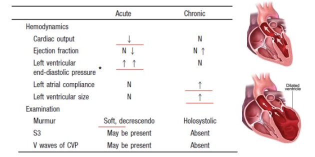
2.1.38 Mikä vaihtoehdoista ei ole oikein?
- Aspiriini on melko tehoton eteisvärinäpotilaan aivoinfarktin estossa
- Dabigatraani on antikoagulantti
- Eteisvärinä on tärkein sydänperäisen aivoinfarktin aiheuttaja
- Antikoagulaatiohoito on aiheellinen oireettomallakin 75-vuotiaalla eteisvärinäpotilaalla
- Eteisvärinäkohtauksen voi kääntää ilman antikoagulaatiota, jos kohtaus on ilmeisesti alkanut edellisenä yönä
eEteisvärinäkohtaus voidaan kääntää eli tehdä rytminsiirto ilman edeltävää antikoagulaatiohoitoa vain silloin, jos kohtauksen kesto on varmuudella alle 12 tuntia JA potilaan stroke-riski on matala (chadsva korkeintaan 1; jos kesto on 12-48h, niin silloin ensimmäinen annos suoraa antikoagulantti (tai pieni molekyylistä hepariinia ja varfariina) jo ennen rytminsiirtoa).
Jos taas chadsva on kaksi tai enemmän, niin annos antikoagulaatiota annetaan aina ennen kääntöä. Erityisesti jos eteisvärinä on jo kestänyt yli 24h, niin on annosteltava antikoagulaatiota vähintään 3 viikon ajan ennen rytminsiirtoa (tai toimenpidettä ennen tulee todentaa ruokatorven kautta tehdyssä sydämen kaikukuvauksessa, että ei ole sydämensisäisiä trombeja).
a: Asetyylisalisyylihappo on verihiutaleiden aggregaation estäjä, ei antikoagulantti. Tutkimukset ovat osoittaneet, että aspiriinin teho eteisvärinästä johtuvan aivoinfarktin estossa on melko huono, mutta se lisää silti merkittävästi vuotoriskiä etenkin iäkkäillä. Sitä ei enää nykyään suositella monoterapiana eteisvärinäpotilaan aivoinfarktin estoon, vaan käytetään antikoagulantteja (ensisijaisesti NOAC, läppäperäisessä eteisvärinässä varfariini).
b: Totta dabigatraani on yksi ns. NOAC-lääkkeistä (tai DOAC-lääkkeistä, molemmat kirjoitustavat käyvät. Tulevat sanoista Non-vitamin K antagonist Oral Anticoagulant tai Direct Oral Anticoagulant). Niitä ovat apiksabaani (esim. Eliquis), edoksabaani (esim. Lixiana), rivaroksabaani (esim. Xarelto) ja dabigatraani (esim. Pradaxa).
c: Aivoinfarktin tärkeimpiä etiologioita ovat suurten suonten ateroskleroosi, pienten suonten tauti ja sydänperäinen embolisaatio. Sydänperäisen embolisaation selvästi yleisin aiheuttaja on eteisvärinä. Eteisvärinässä veri jää pyörteilemään eteisiin ja seisomaan erityisesti vasempaan eteisvatsakorvakkeeseen. Tämä altistaa hyytymän muodostumiselle ja lopulta sen embolisaatiolle aivoverenkiertoon. Tämän estäminen on tärkein syy antikoagulaatiohoidolle eteisvärinäpotilailla.
d: Päätös antikoagulaatiosta tehdään CHA₂DS₂-VA-pisteytyksen perusteella, ei potilaan oireiden mukaan. Eteisvärinä altistaa hyytymille aivan yhtä lailla, oli se potilaalle täysin oireeton (asymptomaattinen) tai oireinen. 75-vuoden ikä antaa pisteytyksessä suoraan 2 pistettä, mikä tarkoittaa korkeaa aivoinfarktiriskiä ja tekee antikoagulaatiohoidosta aiheellisen.
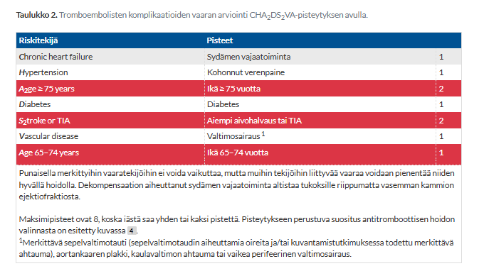
2.1.39 Missä vaiheessa aikaisintaan rintakivun alusta herkkä-Troponiini T on koholla akuutissa sepelvaltimotautikohtauksessa?
- 1h kuluttua
- 3h kuluttua
- 6h kuluttua
- 8h kuluttua
bP-TnT päätösrajana toimii 14ng/l (tosin vieritutkimuksen B-TnT-Vt herkkyys on vain 50 ng/l, ts. sen mittausalueen alaraja on korkeampi kuin herkän P-TnT-tutkimuksen); pitoisuudet vastataan numeerisena tuloksena tasolle 5 ng/l asti.
Troponiinipitoisuudet suurenevat sydäninfarktissa n. 2-4 tunnin kuluessa oireiden alkamisesta. Negatiivinen TnT (tyksissä <14ng/l) 3h kuluttua kivun alusta poissulkee sydäninfarktin. Troponiini T:n huippu saavutetaan n. 12-16 (jopa 12-48) tunnissa ja pysyy koholla jopa 14 vuorokautta.
2.1.40 Mikä väittämä oikein?
- Katetriablaatio on tehokkain hoito nuoren terveen ihmisen toistuvien eteisvärinäkohtausten ehkäisyyn
- Digoksiini on eteisvärinäpotilaan sykkeen hallinnan peruslääke
- Adenosiinia voidaan yrittää käyttää akuutin eteisvärinäkohtauksen kääntöön, ellei sähköinen kardioversio ole saatavissa
- Flekainidia voidaan käyttää muuten terveen sepelvaltimotautipotilaan eteisvärinärytmin hallintaan
- Verapamiili sopii hyvin etesivärinäpotilaan sykkeen hallintaan, jos potilaalla on sydämen vajaatoimintaa
aEteisvärinä saa yleensä alkunsa keuhkolaskimoiden alueilta tulevista ylimääräisistä sähköisistä impulsseista. Katetriablaatiossa nämä alueet eristetään sähköisesti (keuhkolaskimoeristys eli PVI). Kliiniset tutkimukset ovat osoittaneet, että ablaatio on huomattavasti tehokkaampi estämään kohtauksia ja ylläpitämään sinustahtia kuin mikään estolääkitys (kuten beetasalpaajat tai rytmihäiriölääkkeet). Varsinkin nuorilla potilailla sitä harkitaan.
b: Yleensä ensisijainen lääke sykkeenhallinnassa eteisvärinäpotilailla on beetasalpaaja (esim. bisoprololi, karvediloli tai metoprololi). Myös non-dihydropyridiinikalsiumkanavasalpaajat (verapamiili ja diltiatseemi) ovat käytössä ja voivat toimia, mutta niitä vältetään sydämen vajaatoiminnassa negatiivisen inotropian takia. Digoksiiniakin voidaan käyttää ja se sopii kammion kontraktiliteettia lisäävän vaikutuksensa takia parhaiten vähän liikkuville potilaille ja sydämen vajaatoimintaa sairastaville. Amiodaronikin on mahdollinen hidastava lääke, mutta sen pitkäaikaista käyttöä yleensä vältetään sydämenulkoisten haittavaikutusten takia.
c: Adenosiini salpaa eteis-kammiosolmukkeen muutamaksi sekunniksi ja on tehokas lääke esim. AVNRT lopettamiseen, mutta ei käännä eteisvärinää.
d: Flekainidi on tyypin Ic rytmihäiriölääke, ja sillä on proarytminen vaikutus erityisesti potilailla, joilla on rakenteellinen sydänsairaus, kuten sepelvaltimotauti tai sydämen vajaatoiminta -> vasta-aiheinen rakenteellisissa sydänsairauksissa.
e: Verapamiili on kalsiumkanavan salpaaja, jolla on voimakas negatiivinen inotrooppinen eli sydämen supistusvoimaa heikentävä vaikutus. Jos potilaalla on systolinen sydämen vajaatoiminta (HFrEF), verapamiili voi romahduttaa sydämen pumppauskyvyn kokonaan ja ajaa potilaan vaikeaan keuhkopöhöön. Siksi se on vasta-aiheinen sydämen vajaatoiminnassa.2.1.41 Sekundaarisessa eli tyypin 2 akuutissa sepelvaltimotautikohtauksessa on tyypillisesti
- Hoito samanlaista kuin tyypin 1 sydäninfarktissa
- Hapen tarjonnan ja kulutuksen epäsuhta esim. rytmihäirön tai anemian vuoksi
- Sepelvaltimossa tromboosia
- Plakin repeämä tai eroosio sepelvaltimossa
bSydäninfarktit luokitellaan etiologisesti viiteen eri tyyppiin ja erityisen usein mainittuja ovat tyypit 1 ja 2. Tyyppi 1 on tyypillinen sepelvaltimotukkeuma ateroomaplakin repeämästä johtuen. Tyyppi 2 on ns. supply-demand mismatch eli sydänlihas kokee hapenpuutetta, joka ei johdu sepelvaltimon äkillisestä tromboosista, vaan hapenkulutuksen ja hapensaannin epätasapainosta. Aiheuttajana esim. voi sepelvaltimoembolia, nopea rytmihäiriö, anemia, keuhkopöhö, keuhkokuume tai sepsis.
a: Hoito riippuu etiologiasta.
c: Sepelvaltimon tromboosista johtuva sydänlihasiskemia on tyypin 1 infarkti
d: Tämäkin on tyypin 1

2.1.42 Mikä seuraavista on hyödyllinen neuroendokriininen välittäjäaine sydämen vajaatoiminnassa?
- Noradrenaliini
- Aldosteroni
- Angiotensiini II
- Natriureettinen eteispeptidi
dA-tyypin natriureettinen peptidi (ANP, atrial natriuretic peptide) vapautuu eteisten myosyyteistä vasteena lisääntyneelle verivolyymille ja eteispaineelle. BPN taas vapautuu pääasiassa kammioiden myosyyteistä. Molemmilla on samanlainen fysiologinen vaikutus eli lisäävät natriureesia (vähentävät natriumin reabsorptiota nefronin kokoojaputkessa) ja laskevat siten verenpainetta ja aiheuttavat vasodilataatiota (poikkeus: efferentin glomeruluksen arteriolin vasokonstriktiota -> tehostaa diureesia). BPN:llä on pidempi puoliintumisaika. BNP on kliinisessä työssä yleisesti sydämen vajaatoiminnan labramittari (proBPN).
a: Sympaattinen hermosto aktivoituu vajaatoiminnassa, mikä nostaa noradrenaliinitasoja. Tämä piiskaa sydäntä lyömään kovempaa ja nopeammin sekä supistaa verisuonia. Pitkään jatkuessaan noradrenaliini on kuitenkin haitallista: se kuluttaa sydämen happivaroja, altistaa rytmihäiriöille ja aiheuttaa sydämen remodellaatiota. Vaikutusta voidaan estää beetasalpaajilla.
b: Aldosteroni on lisämunuaiskuoren hormoni, joka säästää elimistöön suolaa ja vettä. Sydämen vajaatoiminnassa se aiheuttaa haitallista nestelastia (keuhkopöhöä ja turvotuksia) sekä edistää sydänlihaksen haitallista remodellaatiota (arpeutumista ja jäykistymistä). Vaikutusta voidaan estää aldosteroniantagonisteilla (kuten spironolaktonilla).
c: RAAS-järjestelmän (reniini-angiotensiini-aldosteronijärjestelmä) aktivoitumisen seurauksena syntyvä angiotensiini II on verisuonten supistaja -> nostaa sydämen jälkikuormaa, lisää janoa ja stimuloi aldosteronin eritystä. Vaikutusta estetään ACE-estäjillä tai ATR-salpaajilla.
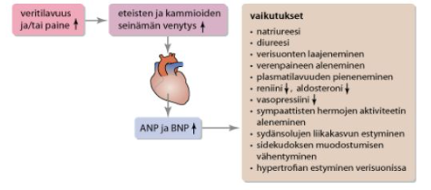
2.1.43 Mikä seuraavista ei ole kestävyysliikunnan vasta-aihe sydänpotilaalla?
- Sairastettu sydäninfarkti
- Epävakaa sepelvaltimotauti
- Kontrolloimattomat kammiorytmihäriöt
- Hoitamaton sydämen vajaatoiminta
aAiemmin sairastettu sydäninfarkti ei ole kestävyysliikunnan vasta-aihe – päinvastoin, säännöllinen ja oikein annosteltu kestävyysliikunta on keskeinen osa infarktin jälkeistä kuntoutusta.
b: Epävakaassa sepelvaltimotaudissa rintakipukohtauksia voi esiintyä levossa tai hyvin vähäisessä rasituksessa ennustamattomasti. Rasitus lisää sydänlihaksen hapenkulutusta rajusti, mikä voi laukaista laajan sydäninfarktin tai vaarallisen rytmihäiriön. Merkittävä liikunta on yleensä sallittua vasta, kun tilanne on saatu vakiinnutettua lääkityksellä, pallolaajennuksella tai ohitusleikkauksella.
c: Kammiorytmihäiriöt, joita ei ole saatu hallintaan lääkityksellä tai muilla hoidoilla, voivat rasituksen (sympaattisen hermoston aktivoitumisen ja adrenaliinin) vaikutuksesta eskaloitua hengenvaaralliseksi kammiovärinäksi, joka johtaa sydämenpysähdykseen.
d: Jos sydämen vajaatoiminta on hoitamaton tai huonossa tasapainossa (potilaalla on nestelastia keuhkoissa tai elimistössä, hengenahdistusta levossa tai vähäisessä rasituksessa), sydän pumppaa jo valmiiksi äärirajoillaan. Fyysinen kestävyysrasitus ylittää sydämen pumppauskapasiteetin, mikä voi johtaa äkilliseen voimakkaaseen verenkierron pettämiseen tai keuhkopöhöön. Kuntouttava liikunta aloitetaan vasta, kun potilaan lääkitys on optimoitu ja paino sekä nestetasapaino ovat vakiintuneet.
2.1.44 Potilastapaus
55- vuotias runsaasti liikuntaa harrastava mies jolla ajoittain levossa runsaasti (=useita tunnissa) kammiolisälyöntejä. Perustutkimukset mukaan lukien ultraääni ja ekg normaalit. Mikä vaihtoehdoista paras?
- Lähetän kardiologian poliklinikalle kiireettömänä potilaana
- En suosittele jatkotutkimuksia
- Lähetän Holter-tutkimukseen
- Lähetän rasitusEKG-tutkimukseen
- Aloitan säännöllisen beetasalpaajalääkityksen
bKammiolisälyönnit eivät suoraan ole aihe kardiologille lähettämiselle, koska niitä on käytännössä kaikilla joskus ja tervesydämisillä ei vaikuta merkittävästi ennusteeseen.
Anamneesi, kliininen tutkimus ja 12-kytkentäinen EKG ovat diagnostiikan kulmakiviä. Laboratoriokokeista riittävät yleensä PVKT, elektrolyytit ja kilpirauhaskokeet. Jos näissä tutkimuksissa ei löydetä viitteitä sydänsairauksista, potilaalle voi sanoa, että lisälyöntitaipumus on hyvänlaatuista eikä tarkempia kardiologisia tutkimuksia tarvita.
Tavallisimpia jatkotutkimuksia ovat EKG:n pitkäaikaisrekisteröinti, sydämen kaikututkimus ja kliininen rasituskoe. EKG:n pitkäaikaisrekisteröinnillä voidaan selvittää myös lisälyöntien määrä ja arvioida hoitovastetta. Sydämen kaikututkimus on perustutkimus kammiolisälyöntitaipumuksen vaarallisuutta arvioitaessa. Se on aiheellinen, kun perustutkimuksissa todetaan viitteitä sydänsairaudesta (esim. sivuääni) tai Holter-tutkimuksessa todetaan suuri määrä yhdenmuotoisia kammiolisälyöntejä (> 3 000–5 000/vrk) tai runsaasti monimuotoisia kammiolisälyöntejä.
Rasitus-EKG tai sepelvaltimoiden tietokonetomografia (TT) on aiheellinen, jos rytmihäiriötuntemuksia on erityisesti rasituksessa tai epäillään sepelvaltimotautia.
Potilaalla on rytmihäiriötuntemuksia vain levossa ja näitäkin suhteellisen harvoin (vaikka onkin useita tunnissa, niin se on sinänsä aika vähän) UÄ+EKG ovat normaalit -> ei tarvita lisätutkimuksia, vaan kyseessä on suurella todennäköisyydellä hyvänlaatuinen ilmiö.
Oireettomien lisälyöntien hoito ei ole tarpeen kuin poikkeustapauksissa. Lieväoireisilla potilaillakaan lääkehoito ei yleensä ole tarpeen; tärkeintä on selvittää potilaalle rytmihäiriön luonne ja sen hyvänlaatuisuus (samalla pyritään eliminoimaan kaikki lisälyöntisyydelle altistavat tekijät (kahvi, energiajuomat, alkoholi, tupakka, stressi, valvominen, kilpirauhasen toimintahäiriöt, elektrolyyttihäiriöt); myös fyysisen kunnon kohentaminen saattaa auttaa). Vaikeaoireisilla voidaan kokeilla beetasalpaajalääkitystä, jos edellä mainitut toimenpiteet eivät auta. Beetasalpaajat tehoavat hyvin stressin tai rasituksen laukaisemiin lisälyönteihin. Ne ovat turvallisia myös avohoidossa, mutta niiden rutiininomaista käyttöä pitää välttää, sillä ne saattavat jopa pahentaa tilannetta, jos lisälyöntejä esiintyy pääasiassa hitaan sykkeen aikana (esim. levossa, rasituksen jälkeen tai nukkumaan mennessä). Lisäksi beetasalpaajat laskevat sykettä ja suorituskykyä, mikä on runsaasti liikkuvalle potilaalle usein erittäin huonosti siedetty ja treenejä haittaava sivuvaikutus.
2.1.45 Mikä näistä lääkkeistä on paras eteisvärinän sykkeen hallintaan?
- Amlodipiini
- Digoksiini
- Karvediloli
- Dronedaroni
- Bisoprololi
eEteisvärinän sykkeenhallinnassa kammiovasteen hidastamiseen käytettävä lääkitys valitaan yksilöllisesti. Beetasalpaajat ovat tehokkaita ja turvallisia eteisvärinän sykkeenhallinnassa ja niitä käytetään yleensä ensisijaislääkkeinä. Bisoprololi on selektiivinen beetasalpaaja ja siten yleensä suositumpi kuin ei-selektiiviset beetasalpaajat.
a: Kalsiumkanavasalpaaja voidaan käyttää, mutta pääasiassa vain non-dihydropyridiinivalmisteita eli verapamiilia ja diltiatseemia. Dihydropyridiinit, kuten amlodipiini eivät vaikuta AV-solmukkeeseen eivätkö siten hidasta sykettä (päinvastoin, voivat aiheuttaa refleksitakykardiaa).
b: Digoksiinia kyllä voidaan käyttää, mutta ei yleensä ensisijaislääkkeenä, vaan vasta jos esim. beetasalpaaja ei riitä. Sopii parhaiten vähän liikkuville potilaille ja sydämen vajaatoimintaa sairastaville.
c: Karvediloli on myös beetasalpaaja, mutta se on epäselektiivinen beetasalpaaja eli se salpaa beeta-1:n lisäksi beeta-2 ja sillä voi olla on myös alfa-1-salpausvaikutus (laajentaa verisuonia). Tämän dual-action-profiilin takia sillä on heikompi vaikutus sykkeeseen kuin selektiivisillä beetasalpaajilla.
d: Dronedaronia ei ole tutkittu akuutin eteisvärinän kammiovasteen hidastamisessa. Vakavien haittavaikutustensa takia se on vasta-aiheinen pysyvässä eteisvärinässä, vaikka se hidastaa kammiovastetta tehokkaasti. Sitä voidaan kyllä joskus käyttää estolääkityksessä eli rytminhallinnassa.


2.1.46 Mikä väittämistä on väärä?
- Vajaatoimintatahdistin sopii hyvin lievänkin vajaatoiminnan hoitoon, jos ejektiofrakto on alle 35% ja potilaalla on LBBB
- Rytmihäiriötahdistimen asentamisesta ei ole yleensä apua potilaalle, jolla sydäninfarkti on aiheuttanut rintakipujen alkuvaiheessa kammiovärinän
- Rytmihäiriötahdistin voi kääntää ylitahdistamalla kammiotakykardian
- VVI-tahdistustapa tarkoittaa fysiologista tahdistusta
dSydäntahdistimen koodi rakennetaan seuraavasti:
- A-kirjain = eteinen
- V-kirjain = kammio
- D-kirjain = molemmat
- O-kirjain = ei kumpikaan
- I-kirjain = aktivaation tunnistaminen inhiboi tahdistinta
- D-kirjain = kammioaktivaation tunnistaminen inhiboi tahdistinta ja eteisaktivaation tunnistaminen aktivoi tahdistinta
- T-kirjain = aktivaation tunnistaminen stimuloi tahdistinta (ei kliinistä merkitystä tällä asetuksella)
- O-kirjain = aktivaation tunnistaminen ei vaikuta tahdistimeen
Tyypillinen fysiologinen tahdistus tarkoittaa sellaista tahdistusta, joka säilyttää eteis-kammiokoordinaation (AV-synkronian). Tällä siis yleensä tarkoitetaan DDD(R) tahdistusta eli eteis-kammiotahdistusta. Se on yleisin tahdistusmuoto eteis-kammiokatkoksessa. Tahdistaa eteisiä ja kammioita (tahdistaa kammiot eteisten ohjaamana). On siis johto eteiseen ja johto kammioon -> eteisaktivaation tunnistaminen stimuloi johtoja ja kammioaktivaation tunnistaminen inhiboi johtoja -> voidaan esim. ohittaa AV-katkos ja saada eteisen aktivaatio välitettyä kammioihin, mutta kammioiden pakolyönnit eivät stimuloi tahdistinta.
VVI-tahdistus ei siis ole fysiologista tahdistusta, vaan siinä tahdistetaan ja tunnistetaan (inhibitorisesti) vain kammioita. Se on ensisijaisesti käytössä pysyvään eteisvärinään/-lepatukseen, jonka aikana todetaan liian hidas kammiotaajuus.
a: CRT (Cardiac resynchronization therapy) viittaa biventrikulaariseen tahdistinhoitoon, jota käytetään pääasiassa vajaatoiminnassa. Käytetään pääasiassa NYHA II-IV oireisilla vajaatoimintapotilailla, joiden ejektiofraktio on alle 30–35 % ja EKG:ssa nähdään LBBB, jossa QRS kesto on vähintään 150ms. Valtaosalla potilaista täyttyvät myös profylaktisen rytmihäiriötahdistimen asentamisen aiheet ja länsimaissa yli 70 % asennettavista vajaatoimintatahdistimista ovat myös rytmihäiriötahdistimia (CRT-D). Voi myös olla pelkkä vajaatoimintatahdistin eli CRT-P.
b: Rytmihäiriötahdistimen (ICD; implantable cardioverter defibrillator) asentaminen on indikoitua primaaripreventiona, kun LVEF ≤ 35% ≥ 40 vrk sydäninfarktin jälkeen ja potilaalla on NYHA II-III-oireet lääkityksestä riippumatta. Asentaminen on aiheellista sekundaaripreventiona, kun potilaalle ilmaantuu myöhään (>2vrk) sydäninfarktin jälkeen pitkäkestoinen VT/VF. On siis ns. the ‘48-hour’ and ‘40-day’ rule: VT/VF 48h sisällä MI:stä -> ei aihetta ICD:lle (revaskularisaatio ja itse iskemian hoito tärkeintä). VT/VF 48h MI jälkeen -> ICD aiheellinen sekundaaripreventiona. LV toimintahäiriö (EF ≤ (30-)35%) >40pv MI jälkeen -> ICD aiheellinen primääripreventiona.
c: Nykyaikaiset rytmihäiriötahdistimet eivät pelkästään anna sähköiskuja. Jos potilaalle tulee nopea, mutta tasainen ja säännöllinen kammiotakykardia, tahdistin yrittää ensin kääntää sen ylitahdistuksella (ATP, antitachycardia pacing). Tahdistin lyö hetken aikaa hieman rytmihäiriötä nopeammin, ottaa sydämen sähköisen kontrollin itselleen ja hidastaa sitten syötteen, jolloin sydän usein palaa normaaliin sinustahtiin. Tämä säästää potilaan kivuliaalta sähköiskulta. Jos rytmihäiriö on epäsäännöllinen tai ylitahdistus ei tehoa, laite antaa rytminsiirtosähköiskun.2.1.47 Mikä väite väärä?
- Kammiotahdistuksen aikana ei voi diagnosoida eteisvärinää
- Vajaatoimintatahdistin parantaa ennustetta, jos vajaatoimintapotilaalla on EKG:ssa levelä LBBB ja NYHA 2-3 oireet
- Rytmihäiriötahdistin voi kääntää sekä kammiotakykardian että kammiovärinän
- DDD-tyyppinen tahdistus on ns. fysiologinen tahdistus, jossa on mahdollista tahdistaa sekä eteistä että kammiota
- Kammiotahdistus estää ST-nousuinfarktin EKG-diagnostiikan
aVaikka kammiotahdistus (joka tekee EKG:n QRS-kompleksista leveän ja vaikeuttaa joidenkin muiden asioiden tulkintaa) estää eteisheilahdusten eli flimmeriaaltojen näkymisen selkeästi itse kammioheilahduksen aikana, eteisvärinä voidaan silti diagnosoida kammiotahdistetusta EKG-käyrästä fibrilloivana perusviivana.
b: Vajaatoimintatahdistin (CRT, resynkronisaatiohoito) palauttaa sydämen kammioiden samanaikaisen supistuksen silloin, kun vasen haarakatkos (LBBB) on saanut seinämät supistumaan epätahtisesti. Suuret tutkimukset ovat osoittaneet, että CRT-hoito vähentää kuolleisuutta ja sairaalahoitojaksoja NYHA II-IV oireisilla vajaatoimintapotilailla, joiden ejektiofraktio on alle 30–35 % ja EKG:ssa nähdään LBBB, jossa QRS kesto on vähintään 150ms.
c: Kuten edellisessä kysymyksessä käsiteltiin, ICD osaa hoitaa kammiotakykardian joko ylitahdistuksella (ATP) tai sähköiskulla, ja kammiovärinän suoralla defibrillaatioshokilla.
d: Tyypillinen fysiologinen tahdistus tarkoittaa sellaista tahdistusta, joka säilyttää eteis-kammiokoordinaation (AV-synkronian). Tällä siis yleensä tarkoitetaan DDD(R) tahdistusta eli eteis-kammiotahdistusta. Se on yleisin tahdistusmuoto eteis-kammiokatkoksessa. Tahdistaa eteisiä ja kammioita (tahdistaa kammiot eteisten ohjaamana). On siis johto eteiseen ja johto kammioon -> eteisaktivaation tunnistaminen stimuloi johtoja ja kammioaktivaation tunnistaminen inhiboi johtoja -> voidaan esim. ohittaa AV-katkos ja saada eteisen aktivaatio välitettyä kammioihin, mutta kammioiden pakolyönnit eivät stimuloi tahdistinta.
e: Kammiotahdistus muuttaa QRS-kompleksia ja repolarisaatiota merkittävästi ja tahdistetussa rytmissä nähdään aina “normaalina” ilmiönä suuria, sekundaarisia ST-nousuja ja -laskuja kytkennästä riippuen. Kammiotahdistus siis aiheuttaa samanlaisen EKG-patternin kuin LBBB, koska tyypillisesti kammiotahdistuksella tarkoitetaan oikeaan kammioon laitettua johdinta. LBBB myös häiritsee infarktien arviointia EKG:sta ja kliinisessä työssä joudutaan tällöin esim. turvautumaan Smith-modifoituihin Sgarbossa-kriteereihin, joka voi välillä olla diagnostinen. Kammiotahdistus tai LBBB ei siis absoluuttisesti estä EKG-diagnostiikkaa, mutta häiritsee sitä merkittävästi.
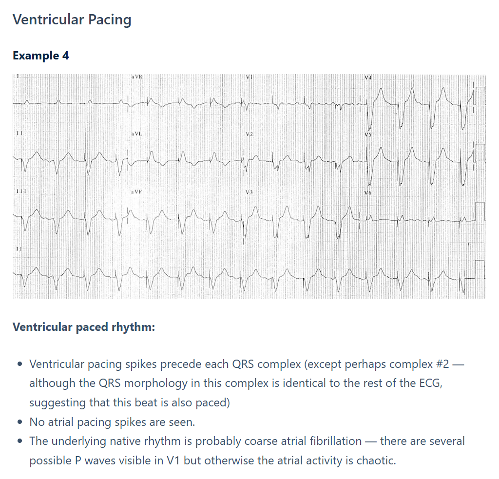

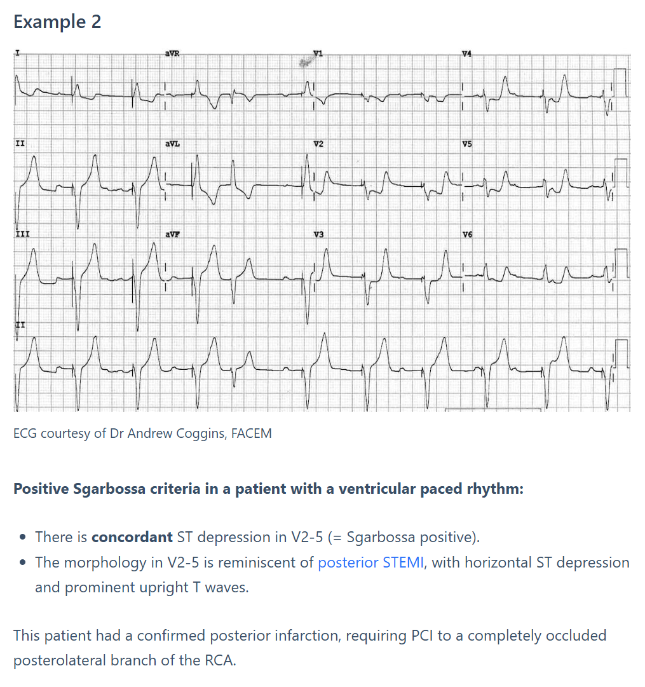
2.1.48 Mikä väite väärä?
- Bioläppä ja TAVI-läppä eivät ole este myöhemmälle (> 3kk) suorien antikoagulanttien käytölle eteisvärinäindikaatiolla
- Suoria antikoagulantteja voi käyttää eteisvärinäpotilaalla, jolla on mekaaninen tekoläppä
- Merkittävä mitraalivuoto ei ole este eteisvärinäpotilaan suorien antikoagulanttien käytölle
- Tekoläpän hyytymisriski on keskimäärin pienempi aorttaläppäpositiossa ja INR tavoitetaso on yleensä 2-3
bUseimmiten ykyään NOAC on ensisijainen eteisvärinäpotilaan antikoagulantti, mutta varfariini on ensisijainen AK-lääkitys, jos potilaalla on läppäperäinen eteisvärinä. Lisäksi mukana ASA, jos kyseessä on mekaaninen mitraalitekoläppä (pysyvästi). Suorien antikoagulanttien (DOAC kuten dabigatraani, rivaroksabaani…) tärkeimpiä vasta-aiheita siis ovat mitraalistenoosi tai mekaaninen tekoläppä. Jos potilaalla on biologinen tekoläppä, joka ei vaadi varfariinihoitoa, suoria antikoagulantteja voidaan käyttää samoin kuin muillakin eteisvärinäpotilailla.
Läppäperäinen eteisvärinä tarkoittaa vaikean mitraalistenoosin tai mekaanisen tekoläpän yhteydessä tapahtuvaa eteisvärinää. Muut tapaukset ovat ei-läppäperäisiä. Sellaisia ovat siis esimerkiksi potilaat, joilla on aorttaläpän ahtauma tai mitraaliläpän vuoto.
a: Iäkkäiden (>75v) aorttastenoosipotilaiden ensisijainen hoitokeino on TAVI-toimenpiteessä (TAVI = Transcatheter Aortic Valve Implantation = TAVR = Transcatheter Aortic Valve Replacement) asennettava biologinen (eli kudostekoläppä) läppä. Menetelmän käyttö lisääntyy myös 65–75-vuotiailla ja sitäkin nuoremmilla aorttastenoosipotilailla (nuorilla ja keski-ikäisillä (alle 65-vuotiaat) potilailla hoitona käytetään yleensä leikkauksessa asennettavia mekaanisia tekoläppiä). Biologiset läpät voivat rappeutua vähitellen etenkin alle 65-vuotiailla, mutta toisaalta ne eivät vaadi vuotoriskejä aiheuttavaa antikoagulaatiohoitoa. Suomessa on kuitenkin tapana antaa toimenpiteen jälkeen 3kk ajan varfariinia. Jos potilaalla on biologinen tekoläppä, joka ei enää vaadi varfariinihoitoa, suoria antikoagulantteja voidaan käyttää samoin kuin muillakin eteisvärinäpotilailla.
c: Mitraalivuoto, oli se kuinka merkittävä tahansa, ei estä DOAC-lääkityksen käyttöä eteisvärinän hoidossa
d: Aorttaläpän kautta virtaa suuri määrä verta kovalla paineella ja nopeudella, minkä vuoksi veri ei pääse seisomaan ja hyytymisriski on siinä pienempi kuin matalamman paineen ja hitaamman virtauksen mitraaliläpässä. Tämän vuoksi mekaanisen aorttakomponentin varfariinihoidon INR-tavoitetaso on yleensä matalampi eli standardi 2,0–3,0. Mekaanisessa mitraaliläpässä tai jos potilaalla on lisäriskitekijöitä, tavoitetaso nostetaan usein välille 2,5–3,5.2.1.49 Mikä näistä on harvinaisin keuhkoembolian oire/löydös?
- Hengenahdistus/takypnea
- Takykardia
- Veriyskä
- Kollapsi/synkopee
- Rintakipu
cVeriyskää (hemoptyysiä) on vain noin 10–15 % potilaista. Yleisimmät oireet ovat hengenahdistus, pleuriittinen rintakipu, takykardia, yskä.
a: Ylivoimaisesti yleisin ja tärkein oire; alkaa tyypillisesti äkillisesti (voi myös olla vähitellen kehittyvää)
b: Sydän pyrkii kompensoimaan keuhkoverenkierron noussutta vastusta ja hapenpuutetta nostamalla syketiheyttä
d: Riippuen lähteestä synkopee on kyllä hemoptyysiä harvinaisempi ja oireet ovatkin hyvin samalla yleisyyden tasolla. Wikissä veriyskä on merkitty oikeaksi vastaukseksi.
e: Kipu on luonteeltaan usein pleuriittista (pistosmaista kipua, joka voimistuu sisäänhengityksessä), mikä johtuu keuhkopussin ärsytyksestä
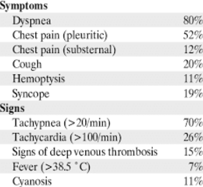
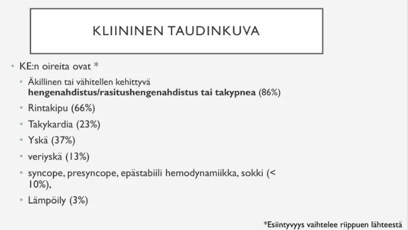